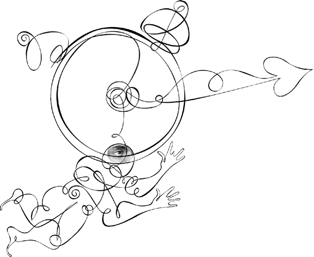
YAVAŞ GÜZELDİR
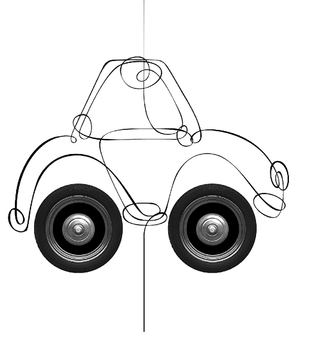
OTOMOBİL UÇAR GİDER
Çalıştığım devlet kurumuna gidip gelirken her gün seksen kilometre yol kat ediyorum. Arabanın içindeyken müzik dinliyor, hayal kuruyor ama gözlerimi yoldan ayırmıyorum. Çünkü bir otoyol üzerinde gidiyorum ve benim ya da bir başkasının en ufak bir dikkatsizliği, büyük kazalara yol açabilir.
Sabahları yağış varsa, trafiğin çok kötü olacağını biliyor ve dur kalk geçireceğim zamana hayıflanıyorum. Metropollerin trafik keşmekeşi hepimizi hayatından bezdiriyor ancak yine de özel taşıtlarımızdan vazgeçemiyoruz. Sözgelimi, uzun zamandır bir yürüyüş yapmadığımı, düşünce ve hayalin eşliğinde uzun saatler yürümediğimi fark ediyorum. Ufak gezinmeler insana ‘yürümenin erdemleri’ni vermiyor ve arabamızın içinde geçirdiğimiz saatler, bizi gerçek dünyadan yalıtıyor.
Bir düşünün, motorlu taşıtların dünyamıza yaptığı kötülükleri. Hava kirlenir, şehirler gürültüye boğulur, şehir otoyollarla delik deşik olur, insanlar ölür. Arabalar erkeklerin yeni şehvet nesneleridir, erkek araba sahipleri gerçekleşmemiş güç ve macera tutkularını makinelerine yansıtır, bu makineleri cinsel bir boşalım nesnesine dönüştürürler. Yollar, hayal kırıklığına uğramış egoların geçit resmi yaptığı mekânlar halini alır. Arabasına binen kişi, onun sahip olduğu bir dizi özelliği içine almış olur. Artık o hareketlilik kazanmış birisidir, ne zaman isterse o zaman, kendi seçtiği yoldan, daha hızlı ve daha uzağa gidebilir. Uzak yerlere vasıl olur, uzak yerlerde oturan eşi dostuyla hasret giderebilir. Öte yandan, modern yurttaş araba kullanmakla, yalnız ve diğer insanlardan uzak olduğu, hatta ‘kendisinin bile ücrasında yaşadığı’ korkularını yatıştırır. Araba sürmek, merkezî bir sosyal ritüele katılmaktır. Pek çok insan için artık kamusal alan, yollardır. Yollarda bir arada bulunma hali vardır, toplumun nabzı burada atmaktadır, insanlar kendi aralarında ve trafik kurallarıyla çekişirler. Sürmek eylemdir. Pedallarla oynayan ve direksiyon çeviren kişi bir arınma yaşar; sürmek, gereksindiği yoğunlaşmayla bizi günlük hayatın dertlerinden ve içe bakıştan uzaklaştırır.
Hız yapmak, bugünün dünyasında en yaygın sivil itaatsizlik tarzı. Araba kullanmak yürümenin yerini almış bulunuyor. Yürüyerek kolayca gidebileceğimiz yerlere bile arabayla gitmeyi yeğliyoruz. Hız yapmak bize zaman kazandırmıyor. Şehir içi trafiğinde hız yapanlar daha fazla ışığa yakalanıyor. Hızla birlikte daha uzak mesafelere gidiyor ve zamanımızın çoğunu yine yollarda harcıyoruz. Hız mimariyi de değiştiriyor: Artık ‘revnaklı şehirler’e, durup temaşa edeceğimiz süslemeli, oymalı binalara ihtiyaç yok. Hızlanan sürücünün gözü tarafından daha kolay algılanacak beton ve cam karışımı binalar şehirlerin yeni tarzını oluşturuyor.
Araba evin erdemlerini kamusal alana taşır. Rahat sunar, aynı zamanda bizi yalıtır da. Bize bir sorumluluk ve kontrol duygusu verir. Yollarda herkes eşittir. Patronundan zılgıt yiyen adam da, patronu da arabalarına bindiklerinde eşitlenirler. Arabasının başındaki insan, anonim dünyada özlemini çektiği sorumluluk ve güç duygusuna kavuşur. Araba sürmek bireysel seçim ve risk almak demektir, toplu taşımanın ana şefkatine benzer güvenliğinin aksine, kişisel sorumluluk ve isyan hakkı vardır araba kullanmakta. Motorlu taşıt, bize bir macera vaat eder. O yüzden reklâmlarda arabaları sıklıkla kıvrımlı çöl yollarında izleriz. Yalnızca yollarda seyretmez ama aynı zamanda onları fethederler. Günümüzün araba reklâmlarında, insanların yokluğu dikkat çekici boyutlardadır. Arabalar adeta kendi kendilerini sürer. Bir araba erotik, dost canlısı ve güvenilir ise insana zaten ne ihtiyaç kalıyor ki?
Hız yapmak bize zaman kazandırmıyor. Hızla birlikte daha uzak mesafelere gidiyor ve zamanımızın çoğunu yine yollarda harcıyoruz.
Otoyollar, içinde yaşadığımız doğayla duygusal bağımızı kesintiye uğratıyor ve çarpık bir şehirleşmeyi beraberinde getiriyor. Bizi bir yerden diğerine, içinde yaşadığımız doğayı fark etmeksizin taşıyor. Hız ve hareketliliğin sınaî ilerlemenin merkezi kabul edildiği bir anlayışı yansıtıyor. Bir metro veya hava seyahati gibi, yer duygusunu yok ederek, zaman ve mekânı sıkıştırarak her şeyin aynı olduğu bir yaşantı doğuruyor. Küreselleşmenin dünyayı aynılaştırdığı ve düzleştirdiği söylenir, öyle ki nereye giderseniz gidin aslında yola çıktığınız yerden hiç ayrılmış, hiçbir yeri geride bırakmış olmazsınız. McDünya’da her şey aynıdır.
Otoyollar bizi yabancılaştırır, dost ve akrabaları uzağa düşürür, ama bir yandan da uzaktaki sevdiklerimize ancak hız yapmakla kavuşabileceğimizi telkin eder. Bizi ‘yalnız kalabalık’lar haline getirir. Kendimizi daha uzaklara vurdukça, yakınımızdaki insanlarla daha az zaman harcarız. Ne kadar çok insanla temas halinde olursak her birine vereceğimiz dikkat o ölçüde azalır. Aşırı hareketli dünyada bildik coğrafî toplumların yerini mekânsız toplumlar alır, yabancılar arasında daha çok zaman harcar hale geliriz.
Hız ve artan hareketlilik, toplumu daha fazla kutuplaştırır. Özel taşıtlarıyla seyahat edenler ile ulaşım için toplu taşıma araçlarına bel bağlayanlar arasındaki uçurum büyür. Araba kullanamayacak kadar genç ve yaşlı olanlar veya maddi sorunlar yüzünden araba sahibi olamayanlar, giderek ikinci sınıf vatandaş oluverirler. İstanbul’da henüz denizi görmemiş çok sayıda insan olduğunu biliyoruz. Hareket halindeki daha çok metal, dünyayı daha emniyetsiz bir yer haline getirir. Çocuklar, artık sokakları serbestçe soluyarak açık mekânlarda oynayamaz. Yürüme azaldıkça, insanlar şişmanlar. Dünyanın farklılıkları törpülenir. Dünya daha fazla anonim ve daha az şenlikli bir yer olur. Çok yakın mahallelerde olsalar da, hareketli zenginler ve hareketsiz fakirler farklı dünyalarda yaşamaya başlar. Fukara, görünmez duvarlarla çevrilen zindanlara hapsolur. Zenginleri yanından yöresinden hızla geçerken görür. Zenginler otoyollardan arabalarıyla, gökyüzünden uçaklarla geçer; fukara televizyonda onların yaşadıkları göz kamaştırıcı hayatları izler. Oysa zenginler için fukara görünmezdir, seyrettikleri hız ve yükseklik, dünyayı daha düşük çözünürlükte görmelerine yol açar. Sosyal ve ekonomik etkinliklerimiz dağıldıkça, politik güç yerel yetkelerden merkezi yetkeye devrolunur. Geniş coğrafya ile başa çıkmak için otorite önce Ankara’ya havale edilir, sonra Brüksel ufukta görünür ve nihayet Dünya Bankası gibi hesap sorulamaz kurumlar yetkeyi devralır.
Hız ve artan hareketlilik, toplumu daha fazla kutuplaştırır. Özel taşıtlarıyla seyahat edenler ile ulaşım için toplu taşıma araçlarına bel bağlayanlar arasındaki uçurum büyür. Araba kullanamayacak kadar genç ve yaşlı olanlar veya maddi sorunlar yüzünden araba sahibi olamayanlar, giderek ikinci sınıf vatandaş oluverirler.
Araba sevdası, içinde yaşadığımız şehri giderek çirkinleştiriyor, ‘hız kirliliği’ çok sayıda insanın hayatını tehdit ediyor. Çevre yollarında slalom yapan pervasız insanlar, arabalarının içinde yalnız olduklarını ve sonucun sadece kendilerini ilgilendirdiğini düşünüyor. Oysa hızın ve bozuk yolların yol açtığı kazalar, her yıl binlerce aileye gözyaşı olarak geri dönüyor. Pek çok kişi, ısrarla eğlence mekânlarına arabalarıyla gidiyor ve evlerine alkollü dönüyor. Araba sevdası, modern insanın bencilliğinin şahikası. Arabanın verdiği kontrol yanılsaması, insanları canavarlaştırabiliyor. İlerleme ve canlılığı yollarla, hızla ve araba sahipliğiyle eşitleyen bir anlayışı gözden geçirmemiz gerekiyor. Doğu Karadeniz’e yapılan yolun o güzelim koyları nasıl vandalca tahrip ettiğini gözlerimle gördüm. O güzelim koyların yerinde yeller estikten sonra, oralara yapılacak bir yolculuğun ne anlamı var?
Şehirlerimizi arabalardan ne kadar arındırırsak, o kadar yaşanabilir kılacağız. Şehrin, arabaların giremediği ‘kurtarılmış bölge’leri olmalı. Yaya dostu bölgeleri çoğaltmalıyız. Otoyol iştahından vazgeçmeyi bilmeliyiz. Bırakalım, tabiatın son parçaları da ellenmeden kalsın. Şehir içinde ve yerleşim yerlerinde hız yapanlara ağır cezaî müeyyideler uygulanmalı. ‘Hız âyin’leri bizi baştan çıkartamamalı. Yürünerek gidilebilecek yerlere yürünmeli, yürürken düşünmeli. ‘Yürümenin erdemleri’ni doya doya tatmalı insan. Yürümekle bedenimizi fark ederiz, o bedeni bize vereni fark ederiz. Yürümek, bu bakımdan şükrün ifasıdır.
Son söz niyetine: Yavaşlayın! Bu hayattan sadece bir defa geçeceksiniz.
HAYATIN RİTMİ
Son zamanlarda çocuklarımız çabuk büyümeleri konusunda baskıya maruz kalıyorlar. İyi de, ne demek çabuk büyümek? İlk olarak aklımıza gelen şey, çocukların, erişkin hayatının kendilerinden saklanması gereken kimi öğelerine fazlasıyla maruz kalmaları. Cinsellik, şiddet, küfürlü konuşma gibi. Yetişkinlik ve çocukluk arasındaki sınırlar muğlâklaşıyor. Altı yaşındaki çocuklar pop yıldızlarını taklit ediyor, sekiz yaşındaki çocuklar cinayet içeren video oyunları oynuyor, televizyon dizilerinden cinsellikle ilgili pek çok malumat ediniyor. Televizyon ve internet, çocuklardan saklanan hayat gerçeklerini ortaya döküyor. Ama çabuk büyüme baskısı sadece medyadan değil, ailelerden de gelebiliyor.
Dâhi bir çocuk beklentisi içinde olan ebeveynler, çocuklarına zihinsel açıdan hızla gelişmeleri için baskı yapabiliyor. Başarının yetişkin dünyasındaki ölçütleri, çocuklara adeta şırınga ediliyor. Çocuklar hep bir adım daha ileri gitmeleri konusunda zorlanıyor. Sorun şu ki; zihinsel zorlamalara rağmen, çocukların duyguları aynı hızla gelişmiyor. Duygular, hızlandırılması mümkün olmayan kendine has bir zamanlama ve ritme sahip. Hızlı büyümenin yarattığı zorlanma, ergenlik dönemi boyunca sorun yaratan ve üzüntü veren davranışlara neden olabiliyor. Çocukların büyümek, öğrenmek ve gelişmek için zamana ihtiyacı var. Neticede çocuk yetiştiriyoruz, hormonlu domates değil!
İçinde bulunduğumuz çağ, “şimdi”yi yaşamamıza fırsat vermiyor, her şey gelecek için yapılıyor. Bu durumun bizde yarattığı zorlanma duygusu da, bizim ihtiyaçlarımızın çocuklarımızın ihtiyacından önce gelmesine, bu yüzden onları acele ettirmemize neden oluyor. Çocuklarımızı kolayca şekil ve kıvam verilebilir, her türlü eğip bükmeye müsait varlıklar olarak algılıyoruz. Dolayısıyla da, onlardan bizim ihtiyaç, program, ilgi ve bakış açılarımıza uymalarını bekliyoruz. Sonuç ise fazla programlanmış, endişeli ve mutsuz çocuklar.
Ebeveynlerdeki bu hırsın modern ekonomiye bir cevap olduğunu söyleyenler var. Herkes reklam dünyasından gelen baskılara bir cevap verme ihtiyacı içinde. Küreselleşme ve ekonomik akılcılık çağında, pek azımız kendisini emniyette hissediyor. Cüzdanımızda daha fazla para var; ama alınması gereken daha çok şey ve bütün bunları kazanmak için harcanması gereken daha fazla mesai de var. Başarımızın göstergesi, sahip olduklarımız ve hayatın öncelikli gündemi ekonomik mücadele olduğunda, anne babalık da iş hayatındaki sert ve rekabetçi üsluba bürünüyor.
Ancak tüm bu yapılması gerekenler arasında, çocuklar gerçekten çocuk olmaya zaman bulamıyor. Sınırlarını aşması için zorlanan çocuk endişe belirtileri gösteriyor. Yalnız kalmaktan, hata yapmaktan korkuyor. Yalnızlıkla baş etmek için içsel kaynaklarına müracaat edemiyor. Hep dışarıdan kendisine yönelecek bir ilgi arayışında olabiliyor.
İçinde bulunduğumuz çağ, “şimdi”yi yaşamamıza fırsat vermiyor, her şey gelecek için yapılıyor. Bu durumun bizde yarattığı zorlanma duygusu da, bizim ihtiyaçlarımızın çocuklarımızın ihtiyacından önce gelmesine, bu yüzden onları acele ettirmemize neden oluyor.
Ne yapmalı? Bırakalım, çocuklar diledikleri gibi çocukluklarını yaşasınlar. Hata yapabileceklerini ve bu hatalardan öğrenebileceklerini kabullensinler. Organize edilmemiş, rehbersiz, biçimsiz, hayal ürünü oyunlar çocuklara iyi gelir. Oyun, çocuklara bağımsızlık ve kim oldukları duygusunu sağlar. Kendi başına vakit geçirebilmek de bir meziyettir. Aslında küçük çocuklar en iyi gerçek oyuncaklarla, diğer çocuklarla ve yetişkinlerle oynarken öğreniyor. Dokunma duyusuna ve sosyal deneyimlere dayanan bu faaliyetler, onların erken dönem gelişimlerinde çok etkili olabiliyor. Zaten çocuklar ihtiyaç duydukları uyaranları her gün karşı karşıya geldikleri dünyadan alabiliyorlar; çimlerde sürünmek, toprakla oynamak, konuştuklarımızı dinlemek gibi. Çocukların, merak ettikleri soruların cevabını, kendi gözlemleriyle kendi çevrelerinde bulmaları, onları hem duygusal hem zihinsel açıdan zenginleştiriyor.
Çocukların iç dünyalarına saygı göstermeliyiz. Bize düşen, onlara güvenli bir ortam sağlamak. Bu güveni hissettiklerinde etrafı daha kolay keşfeder, daha kolay bağımsızlık duygusu edinirler. Bırakalım, çocuklarımız da biz nasıl büyüdüysek öyle büyüsünler. Düşe kalka, toza çamura bulanarak, anne babalarının güven verici varlığında seçim ve hata yapabilmenin özgürlüğünü içlerine çekerek.
Hayatın ritmine uyarak.
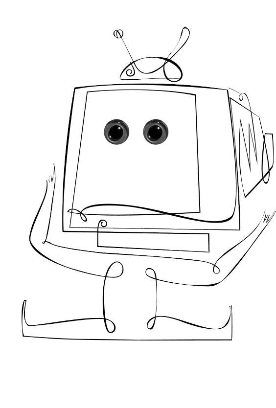
USUL USUL
Bir dost meclisinde sohbet ediyoruz. Bir ergen babası olan dostumuz, çocuğunun ısrarla Akmerkez’e gitmek ve oradaki kafelerde oturmak istediğini söylüyor. Oradaki gençleri izlediğinde hepsinin bir örnek giyinip aynı sözcüklerle konuştuğunu şaşkınlık içinde gözlemlediğini anlatıyor.
Ekran teknolojisinin klonladığı bir kuşak, internet üzerinde ‘konuşuyor’ ve zamanının çoğunu bilgisayar başında saldırgan içerikli oyunlarla geçiriyor. ‘Gençliğimiz, eyvah!’ yakınmalarının çoğaldığı, anne ve babalarla gençler arasındaki dilsizliğin tırmandığı bir zamanda yaşıyoruz.
Bugünün gençleri bir ‘afazi’den mustarip, yani kendilerini sosyal ve tarihi bir özne olarak ifade etmekten yoksunlar. Adeta beyinlerinin süreklilik duygusu sağlayan merkezleri kesilip alınmış. Bellek eksikliği, bir tarihsizlik ve süreksizlik buhranı doğuruyor. İnsan özne olduğu duygusuna ancak zamanın içinde yaşayarak, geçmişten bugüne hareket ederek ulaşır. Sürekliliğin, ‘yekpare, geniş bir ânın parçalanmaz akışı’nın bir parçası olmakla varlığımızı hissederiz. Günümüzün gençleri, klavyelerin ucunda ışık hızıyla seyahat ediyor ve fakat hiçbir yere ulaşmıyor. Çok hızlı giderseniz içinizde olup bitenleri özümseyecek ve onu kendi duyarlılığınızın bir parçası kılacak kadar vaktiniz olmaz. Güzellik ancak onu durup temaşa edecek zamanınız varsa size bir şey söyler. Günümüzde görmenin yerini bakmak, hatta bakmanın yerini göz atmak alıyor. Şeyler, ancak iki göz atış arasındaki süre boyunca ilgimizi çekebiliyor.
İnsan özne olduğu duygusuna ancak zamanın içinde yaşayarak, geçmişten bugüne hareket ederek ulaşır. Sürekliliğin, ‘yekpare, geniş bir ânın parçalanmaz akışı’nın bir parçası olmakla varlığımızı hissederiz.
Zamanın giderek daha fazla parçaya bölündüğü, akışının parçalandığı bir çağda o kadar çok iş yapıyoruz ki anne babalığımız da günübirlik yaptığımız işlerden sadece bir tanesi oluveriyor. Bir bilimsel çalışmaya göre, İngiliz anne babalar çocuklarıyla günde ortalama sekiz dakikalık anlamlı konuşma gerçekleştirirken, bu süre Amerikalı anne babalar için sadece beş buçuk dakika. 1965 yılından 1990 yılına dek anne babaların çocuklarına ayırdıkları süre, neredeyse yarı yarıya azalmış. Oysa bir ebeveynin çocuğu ile hemdem olabilmesi, kafası dağılmadan, sıkıntısız bir biçimde onu dikkatinin odağına oturtabilmesiyle mümkün. Çocuklar kendilerine çeki düzen vermeyi işte bu uyumla öğreniyor. Anne babalar çocuğun ritimlerini hissedip buna cevap verebilirlerse, çocuklar ve nihayet gençler duygusal dünyalarına çeki düzen verme konusunda daha başarılı olabiliyor.
Saldırganlık içeren video oyunları ile büyüyen çocuklar daha hızlının daha iyi olduğuna koşullanıyor. Bu oyunların yüksek hızına kendisini ayarlayan beyinde, riski hissedip uyarı gönderen ve hatta başkasının acısını hissetmeyi sağlayan beyin bölgeleri, giderek daha etkisiz hale geliyor. Saldırgan kişilikleri olmayan gençler bile bu tür oyunları izledikten sonra daha kolay kavgaya tutuşuyor. Televizyon ve video oyunları diyetiyle büyüyen kuşakta bağımlılık giderek daha yaygın bir sorun haline geliyor. Ani duyusal uyarılar ve hızla değişen imgeler, beynin dikkatini iç âlemden alıp dış uyaranlara döndürüyor. Dikkat eksikliği sorunu giderek salgın boyutlarına varıyor. Sürekli uyarılan ama dünyaya etkin bir biçimde katılmayan çocukların ritimleri de gerçek hayatın sohbet ve ilişkilerinden çok video oyunlarının ritmine ayarlanıyor.
Çocuklarımızı ve gençleri oyunların başından alıp onlarla uzun uzun konuşmamız gerekiyor. Telaşla değil, zamanı içlerine çekerek, zamanın genişliğini doyasıya tadarak, usul usul büyümek onların doğal hakkı. İşe, çoktandır çocuk ve gençlerimizin yeteneklerini törpüleme vazifesi edinmiş okullarda konuşma ve sohbeti diriltilmekle başlayabiliriz. Bir genç ancak konuşmak ve kendini ifade edebilmekle sağlıklı bir benlik duygusu geliştirir.
Bir ebeveynin çocuğu ile hemdem olabilmesi, kafası dağılmadan, sıkıntısız bir biçimde onu dikkatinin odağına oturtabilmesiyle mümkündür.
Giderek daha fazla gencin on-line sohbet odalarında ‘konuştuğu’, bedenin iletişime dahil olamadığı bir zamanda; dili eğip bükmeden, kelimelerin sıcaklığını hissederek konuşmak özendirilmelidir. Sınıf içinde sohbet edebilmek, öğrencilerin köprüler kurmak ve olan biteni yorumlamak yolundaki becerilerini geliştirecektir. Evin içinde de televizyonun uğultusunun, bilgisayarın vızıltısının dindiği ‘kurtarılmış’ anlar olmalıdır. Evlere ve okula ‘yavaşla’ tabelaları asabiliriz. Ve sonra atalarımızın ve dedelerimizin öykülerini çocuk ve gençlerimize usul usul anlatmaya başlayabiliriz.
Usul, asildir.
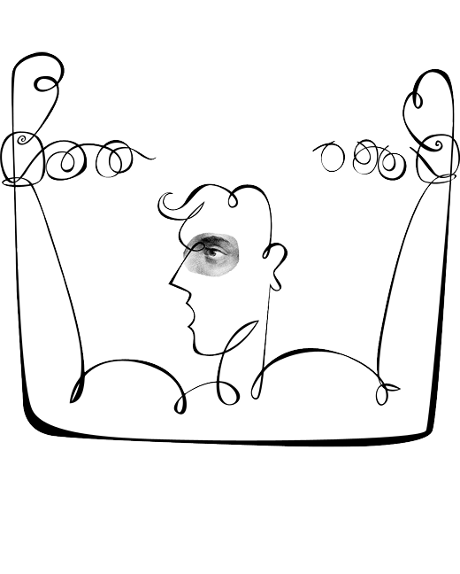
TEMENNADAN USANMAK
Bir arkadaşım, Türkiye’de pek çok insanın çalışmak için can attığı büyük bir firmada üst düzey yöneticiydi ve azımsanmayacak bir maaş alıyordu. Ne ki şirket onun bütün ruhunu emiyor, geriye bir insan posası bırakıyordu.
Arkadaşım yıllarca çok iyi maaşlarla, gece gündüz demeden çalıştı. Geceleri rahat uyuyamıyor, şirketle ilgili sorunlar kafasının içinde fır dönüyordu. Temel meselesi, insanları çalıştığı şirketin ürününü kullanmak suretiyle nasıl daha fazla tüketici kılabileceğiydi. Hakkını vermek gerek, arkadaşım hâlâ hülyalara ve insani değerlere inanan bir adamdı. Ruhundaki bozulmayı görerek ani bir kararla istifa etti.
Telefonda benimle tanışmak istediğini söyleyen genç bir kişi, çokuluslu bir finans şirketinde iyi bir pozisyonda çalışıyordu. Ama bırakıp gitmekten söz ediyordu, yaptığı işe hiç inanmadığı gibi bu işin getirdiği ‘karakter aşınması’ndan yakınıyor, hatta “Sizin ofisinizde sekreterlik dahi yapabilirim” diyordu. Yakındığı şey sadece işinin anlamsızlığı değil, iş ortamındaki insan ilişkilerinin de merhamet ve dostluktan nasipsiz olmasıydı.
Kapitalizmin ruhları ifsat eden gözbağcılığı, çalışma ile ihtiyaç arasındaki bağı koparmış olmasıdır. “Yeterli olan, iyidir” düsturu geçmişin küflü sandukalarına kaldırılmıştır artık, verimliliğinin nesnel ölçüsü olarak kazanç artışı belirlenmiştir. Sayılabilir, sayıya vurulabilir olan gerçektir ve başarı artık kazanılan para ve biriktirilen servet miktarı ile ölçülür. Fazla azdan iyidir, daha fazla kazanmayı başaran daha az kazanandan iyidir. Verimlilik en üst düzeye çıkarılmalıdır.
Çabuk iletişimin ve e-maillerin gayrişahsi doğası, insanları yalıtır ve yabancılaştırır. Aşırı çalışma ve her an küçülme tehdidi stres yaratır. Ve nihayet buradan benmerkezli bir popüler kültür üretilir, artık iyiliğin adap ve erkânı değil, yükselme arzusunun zalimliği iş başındadır.
Duyarlı insanları bizar eden de işte tam burasıdır: “Yaptığım iş insanlara ne tür bir yarar olarak geri dönüyor? Benim verimliliğimin artmış olması sonunda şirket dışında kim kazanıyor? Ben kazanıyor olamam çünkü özel hayatım berbat durumda, zamanımı hiç de nitelikli bir biçimde geçirmiyorum. Müşteriler de kazanıyor olamaz, zira daha fazla harcıyorlar ve anlık tüketim hazzından sonra ellerinde bir şey kalmıyor.”
Çalışanların soru sorması tehlikelidir. André Gorz’un ifadeleriyle söylersek, “İnsanlar bütün değerlerin sayılabilir olmadığını, paranın her şeyi satın alamayacağını, satın alınamayan şeyin temel olduğunu hatta işin özü olduğunu keşfettiklerinde ‘ticaret düzeni’ temelden sarsılır.”
Yaşama zamanının yokluğunda, kayıp zamanı, yani çalışmanın ziyan ettiği hayatı telafi eden tek şey paradır. Oturduğumuz evler, sürdüğümüz konforlu arabalar, gidebildiğimiz lokanta ve eğlence mekânları, aldığımız ıvır zıvır, çalışma köleliğimizi meşrulaştırır. Ama ya onlar da ruhumuzdaki sızıyı dindirmiyorsa? Ya bunlara sahip olmak için ortaya sürdüğümüz pey, yani ömrümüz, bizim için daha kıymetliyse? Hayat geri gelmiyor. İnsan, ruhunu özgürleştirmeyen, kendisine bir ifade imkânı sunmayan, kendisini gerçekleştiremediği işlerle tatmin bulmuyor. Ruh istiyor ki kendi hikâyelerini anlatabilsin. Hikâyeleri başka insanlara çarpsın, onlarda çoğalsın, kendisine geri dönsün. Çağdaş iş yaşamı ve şirket köleliği ise disipline dayalı. Göreceğiniz düşlerin bile birbirine benzediği, kılık kıyafet, jest ve mimik, şaka ve konuşmaların birörnekleştiği bir disiplin düzeni öngörüyor.
Buna ‘narsistik kafes’ diyor bir yazar: İşyerinde herkes anonim, teknoloji insanları işyerinde yalnızlaştırır. Bilgisayarının içine gömülmüş onlarca kafa geniş bir salonda hiçbir mahremiyetleri olmaksızın çalışır. Çabuk iletişimin ve e-maillerin gayrişahsi doğası, insanları yalıtır ve yabancılaştırır. Aşırı çalışma ve her an küçülme tehdidi stres yaratır. Ve nihayet, buradan benmerkezli bir popüler kültür üretilir, artık iyiliğin adap ve erkânı değil, yükselme arzusunun zalimliği iş başındadır.
Teknoloji işi evinize, rüyalarınıza, sevdiklerinizle geçirdiğiniz mahrem anlara taşır. Cep telefonu kapanmaz, e-mailler günde beş vakit kontrol edilir. Böylece hayatın kalan alanlarıyla ilgili duyarlıklarınız törpülenir. Kendinize, sevdiklerinize ayıracağınız zaman ve eğlence, ihtiyaçlar hiyerarşisinde en aşağıya iner. İşkolikler kişisel ilişkilerini feda etmek pahasına başaracakları şeyle meşgul olan, benmerkezci, duygularından uzaklaşmış yeni bir insan tipini oluşturur. Yapmak için ayrılan zaman, olmak için ayrılması gereken zamanı yer bitirir.
Kalenderî meşrepliler, aylaklar, rindler! Dünyaya temenna etmeyenler. “Bir devlet içün çerhe temennadan usandık” diyebilenler. Ne mutlu onlara!
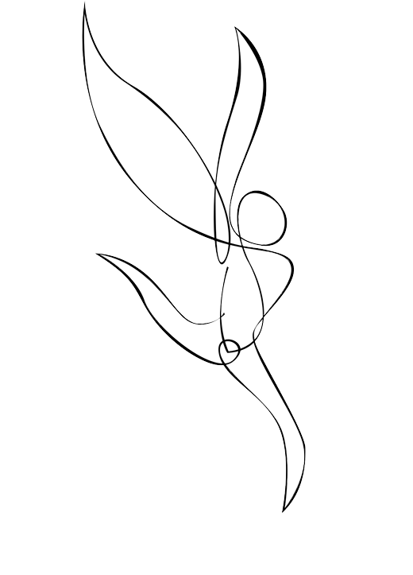
YAVAŞLIĞA ÖVGÜ
Toronto’nun bir tatil günü rehavetiyle iyiden iyiye ölgünleşen sokaklarında, Kanadalı çocuk psikiyatrisi profesörü bir meslektaşım ve onun eşi ile geziniyoruz. Gazeteci olan eşi, meslektaşımdan şakayla karışık dert yanıyor, “Biliyor musun” diyor, “Hindistan’da, tatilin ve tarihin ortasında senin bu arkadaşın ne yaptı? Elindeki Blackberry cihazıyla sağa sola e-mailler gönderdi. Hindistan’da, tatilde!”
Teknolojinin hayatımıza türlü münasebetsizlikler soktuğunu biliyoruz. Kandillerde ve bayramlarda kişiye özel olmayan kutlama mesajları göndermek bunlardan birisi. Mabetlerin, konserlerin, konferansların ve karşılıklı konuşmaların kendilerine mahsus sessizlik, akış ve ritminin ortasına bir ses bombası gibi düşen cep telefonu zırıltısı, bir başkası. Düşünün, bir dostunuza heyecanla bir şey anlatıyorsunuz ve birden onun cep telefonu çalıyor: Arayan kişi o sırada sizin anlattığınız şeyden daha güzel, daha heyecanlı bir şey söylemeyecek bile olsa, öncelik nedense telefona veriliyor. Teknoloji hayatın kendiliğindenliğine, doğallığına müdahale ediyor.
Hızla birlikte tabiata bakışımız değişiyor. Atlı arabadan trene geçmekle, insanın manzarayı izleme biçimi köklü bir değişiklik geçirmişti. Zaman ve mekân, hızla birlikte farklı algılanıyor, gerçeklik bambaşka bir şekilde tecrübe ediliyordu. Geçtiği yerlerin ses ve kokularını içine çekerek değil, bir pencerenin izin verdiği kadarını çok kısa bir zaman parçasında görerek seyahat ediyordu tren yolcusu. Günümüzde ise demir yolunun yerini uydu dalgaları ve fiberoptik kablolar almış bulunuyor. Nerede bulunursak bulunalım, bir tuşla başka bir âleme geçmemiz, bedenimizi geride bırakarak bilincimizle başka coğrafyalarda dolaşmamız mümkün.
Modernliğin tarihi, gerçekliğin merceklerden ve pencerelerden süzülerek elde edilmesiyle kaim. Mercekler giderek insan gözünün ve görme işlevinin yerini alıyor; bilgisayar klavyeleri ve sesli mesajlar ise, iletişimin. Algı ve ifade bedenden azat oluyor. Böylece şeylerin yakınlığı bize dokunamıyor. Başka bir insana, bir kuş sesine, sabah güneşine değemiyoruz. Hız, tabiata içkin olan güzelliği görmemizi engelliyor. Bedenlerimiz bu hıza programlı olmadığından, ağır ağır çözünmeye başlıyor. Hıza dönük hayat tarzlarımızdan kaynaklanan bedensel ve ruhsal hastalıklarda patlama yaşanıyor.
Hız uyuşturuyor. Artık her yerde ve hiçbir yerdeyiz. Orada ama buradayız. Dostumuzla sohbetteyiz ama telefonun veya sohbet ağının ucundayız. Aslında bütün varlığımızla bir yerde değiliz, parça parça orada ve buradayız. Anlaşmak için zaman gerekir, zaman ve mekân. Konuşmanın yanında susmak da gerekir, birbirinin söylediğine dikkat kesilebilmek, kalbini dostunun kalbine yaklaştırmak gerekir. İnsana ve gerçek hayata ayrılan zaman azaldıkça yabancılaşma çoğalıyor. Gerçek hayattan ayrışan bilinç, sanal ses ve sanal sohbetle uyuşuyor.
Hız uyuşturuyor. Artık her yerde ve hiçbir yerdeyiz. Aslında bütün varlığımızla bir yerde değiliz, parça parça orada ve buradayız. Anlaşmak için zaman gerekir, zaman ve mekân. Konuşmanın yanında susmak da gerekir, birbirinin söylediğine dikkat kesilebilmek, kalbini dostunun kalbine yaklaştırmak gerekir.
Zamanın para demek olduğu bir çağda dinlemeye ve düşünmeye ayrılan vakit giderek azalıyor. Yüz yüze konuşmanın gerektirdiği duraklamalar, düşüncenin ufak molalarla derlenip toparlanma ihtiyacı, fazlasıyla sıkıcı ve yavaş bulunuyor. Böylece diyaloğun yerini veriler, yorumun yerini power point sunumları alıyor.
İnternet ve cep telefonlarıyla kişisel zaman kavramımız buharlaşıyor, özel alanlarımız daralıyor; bütünlük duygusundan uzaklaşarak parçalara ayrılıyoruz. Çok sayıda insanla, daha geçici ve sığ ilişkiler kuruyoruz. Zamanın hızlanması, yavaşlık ve dikkat isteyen uğraşıları rafa kaldırıyor. Çocuklarla ve eşle, sadece onların istekleri gözetilerek geçirilen zaman, adeta ‘kayıp’ olarak algılanıyor. Hayatın öncelikleri konusunda modern insanın kafası karışıyor; kişisel olanı mı yoksa işi mi öncelemeli? Bir tercih yapmak söz konusu olursa, çocuklarıyla harcanacak keyifli bir zaman parçası mı daha kıymetli yoksa bir iş yemeği mi?
İşkoliklik, kişinin kendisine sevdalanmasının değişik bir örneği olarak genç profesyoneller arasında yükseliyor. Hayatın ritimlerini pazarın ritimlerine ayarlayan, ancak paraya tahvil edilebilen değerlere önem atfeden yeni bir benlik, küresel rüzgârla birlikte dünyaya yayılıyor. Oysa güzel olan, kayda değer olan ne varsa yavaşlıkla yapılır. Telâş ve acelecilik toplumuna karşı, teenni ve sükûnet toplumunu diriltmemiz gerekiyor.
İşkoliklik, kişinin kendisine sevdalanmasının değişik bir örneği olarak genç profesyoneller arasında yükseliyor. Hayatın ritimlerini pazarın ritimlerine ayarlayan, ancak paraya tahvil edilebilen değerlere önem atfeden yeni bir benlik, küresel rüzgârla birlikte dünyaya yayılıyor.
Sevmek için zaman ayırmak gerekir. Bilmek için zamana ihtiyaç duyarız. Güzelliği ancak zaman ayırarak fark ederiz. Zamanla olgunlaşırız. Lütfen yavaş gidiniz.
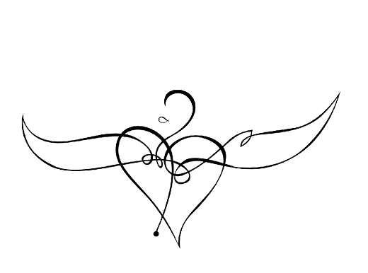
UZUN ŞİMDİ
“Hayat bir çizgi değil” diyor bir Zen ustası, “birbiri ardınca gelen şimdilerden ibaret”. Hayat uzun bir şimdiden başkası değil. John Lennon’un ifadesiyle, “Hayat siz planlar yaparken başınıza gelen şeydir”. İnsan zamanın sınırlarını aşabilen bir varlık. Yaşantısına uzak geçmişin ve geleceğin ışığında bakabilir, geçmişin seslerini ve geleceğin imgelerini bugüne taşıyabilir. Zaman, insan varlığının kalbidir. Yalnızca uzayda yer kaplayan varlıklar değiliz, zaman duygusu da insanlığımızın tanımlayıcı öğelerinden birisi. İnsan varlığı ancak zamanla açığa çıkıyor ve aydınlanıyor.
Zihinsel zaman hızlanırken duyguların zamanı kendi yavaş ritmiyle ilerliyor. Zihnin zamanı ile duyguların zamanı arasındaki yarık büyüyor. Görmezden gelinmiş, ihmal edilmiş, işlenmemiş duygular, bir endişe nöbeti veya iç huzursuzluğu şeklinde bizi yokluyor.
Zaman algımız ruh halimize göre değişiyor. Sinirli, beklentili, çökkün veya korkulu olduğumuzda zaman yavaşlıyor. Yaşlandığımızda hızlanıyor. Çocuk için ertesi gün uzak bir gelecek olarak görünürken, yetişkin birisi için gelecek hafta, çok yakın bir zamandır. Bölündüğünde, akışı zedelendiğinde sahip olduğumuz zaman elimizden kayıp gidiyor. Zamanımız bölündükçe şimdiyi yaşama şansımız azalıyor. Gün içinde aldığımız telefonlar bir ânı derinlemesine yaşama şansımızı yok ediyor. Ruh halimiz zamanı nasıl yaşadığımızı birebir etkiliyor. Sözgelimi çökkün bir insan geçmişe saplanıp kalıyor, tedirgin insanlar gelecekteki olumsuz olayların beklentisiyle bugünü kendilerine zehir ediyor.
Gezegenimizde hâlâ takvim zamanına itibar etmeyen, dakika veya saat gibi mefhumları olmayan, bir ânın bütün bir sabah sürebildiği kültürler var. Döngüsel zamana inanan kültürlerde, gelecek endişesi veya baskısı yok. Bu kültürlerde başarmak, yenilik meydana getirmek veya ihtiyaçtan fazlasını üretmek gerekmiyor. Böylesi kültürlerde yaşlılık, insana kazandırdığı bilgelikle değer gören bir hayat evresini oluşturuyor. Oysa zaman algısının doğrusal olduğu kültürlerde, ileri hamle etmeyen kişiler, kolayca verimsiz ve giderek geçersiz hanesine yazılıyor. Erdeme ve bilgeliğe duyulan bağlılık, yerini malumata duyulan bağlılığa bırakıyor.
Modern dünya bizden hızlı davranmamızı istiyor. Zihinsel zaman hızlanırken duyguların zamanı kendi yavaş ritmiyle ilerliyor. Zihnin zamanı ile duyguların zamanı arasındaki yarık büyüyor. Görmezden gelinmiş, ihmal edilmiş, işlenmemiş duygular ise bir endişe nöbeti veya iç huzursuzluğu şeklinde bizi yokluyor. Bu endişeden kaçmak için daha çok hızlanıyor, hızlandıkça insanlığımızın dokusunu oluşturan duygularımızdan daha da uzağa düşüyoruz. Ve sonra, ileri yaşlardan geçmişimize baktığımızda kocaman bir boşluk görüyoruz, yapmak uğruna olmayı feda ettiğimiz, sevdiklerimizi yeterince sevmediğimiz, içimizde ifade edilmeyi bekleyen sözcükleri dillendiremediğimiz, sadece bize ait olan bir hikâyeyi söze dökemediğimiz için, varoluşsal bir suçluluk hissine mağlup oluyoruz.
Saatlerini doğanın ve iç dünyalarının çevrimine ayarlayanlar, güneşi ve gökyüzünü görebilenler, hayatı uzun bir şimdi veya yekpare, geniş bir an olarak yaşayabilenler, ‘içime çektiğim hava değil gökyüzüdür’ diyebilenler, eve mutlu dönüyor.
Zaman akıp gidiyor. Geçen her yıl ömrümüzü nasıl yaşadığımız, onu hangi anlam ile taçlandırdığımız konusunda bizi bir iç sorgulamaya yönlendirmiyor; takvim zamanının hızı, iç zamanımızın ancak yavaşlıkla değer bulacak süreçlerini berhava ediyorsa, durup bir kez daha düşünmemiz gerek.
Bize düşen, hayatımızı, o uzun şimdiyi, Tanpınar’ın dizeleri eşliğinde bir kez daha düşünmek: “Ne içindeyim zamanın/ Ne de büsbütün dışında/ Yekpare, geniş bir ânın/ Parçalanmaz akışında” Ânı yaşamayı bilmek büyük meziyet. Bugünün hakkını verebilmek. Kierkegaard’ın ‘göz kırpması’ veya ‘doğurgan an’ dediği, kişinin geçmiş veya gelecekten önemli bir olayın anlamını birden kavradığı anları yakalayabilmek. Kişinin farkındalığının yükseldiği, ‘ebediyetin zamana dokunduğu’ anlar.
Saatlerini doğanın ve iç dünyalarının çevrimine ayarlayanlar, güneşi ve gökyüzünü görebilenler, hayatı uzun bir şimdi veya yekpare, geniş bir an olarak yaşayabilenler, ‘içime çektiğim hava değil gökyüzüdür’ diyebilenler, eve mutlu dönüyor.
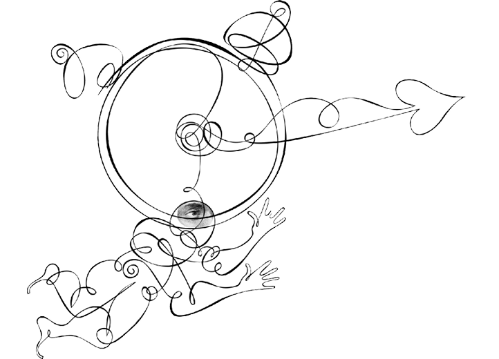
YAVAŞ GÜZELDİR
“Her şeyin bir mevsimi var, gökler altında her amacın bir zamanı var” diyor İncil. “Bütün zamanlar birbirine benzemez” diyordu Cervantes. Günümüzde zamanlar birbirinin aynı. Saplantılı bir zaman hastalığı bize zamanın bitmediğini, hiç zaman kalmadığını, acele etmemiz gerektiğini telkin ediyor. Büyüğün küçüğü yendiği bir dünyadan, hızlının yavaşı yuttuğu bir dünyaya doğru gidiyoruz. Artık hepimiz hız tarikatının müritleriyiz, Sabbah’ın fedaileri gibiyiz. Ancak bizim başımızı döndüren, bizi sarhoş eden hızın ta kendisi. Suikast ettiğimiz de kendi hayatlarımız.
Zamandan yana sıkışıklık, modern insanın kendisine kurduğu büyük tuzaklardan birisi. Zaman hastalığı, daha derin, varoluşsal hastalığın bir habercisi. Tükenmişliğin son demlerinde insanlar, kendi mutsuzluklarından kaçmak için daha da hızlanıyorlar. Hız, modern dünyanın dehşet ve kuraklığına karşı kalkan işlevi görüyor. Hızla birlikte unutmak mümkün oluyor. Hatırlamak istemediğimizi, hızlanarak unutuyoruz. Hızla gelen bir esrime halidir söz konusu olan. Peki hız, hayattan mı yoksa ölümden mi bir kaçış? Hız, bir bakıma insanın kendi ölümünün, ölümlülüğünün farkına varmasını engelliyor. Hızla gelen duygusal uyarı bolluğu, insanın dikkatini çeliyor ve onu kendi kırılganlığını fark etmekten alıkoyuyor.
Hızlı yemek ve hızlı besin yetiştirmek insan sağlığını tehdit ediyor. Bir sohbeti bölüşerek, aralarda durup dinlenerek paylaşılan yemekler yerini çabuk tüketilen besinlere bırakıyor. Hormon ve kimyasallarla hızlı büyüten her türlü besin, kansere davetiye çıkarıyor.
Oysa Feuerbach’ın söylediği gibi ‘biz yediklerimiziz’. İnsanların hızlı beslenmeyle uğradığı felaketlerden kurtulma fikriyle yola çıkan ‘yavaş besin’ hareketi dünya üzerinde yaygınlaşıyor. Genetik değiştirmeye karşı çıkan, organik tarımı önceleyen, biyolojik çeşitliliğe prim veren bu hareket; küçük, yerel ve telaşsız olana yaptığı vurguyla global kapitalizme muhalefet ediyor. Yiyeceklerimizi hakkını vererek, daha metafizik bir bakış açısıyla konuşacak olursak ‘şükrünü eda ederek’, onlarla ve o masanın etrafında bulunan dostlarımızla konuşarak tüketmek, bizi daha insan kılar.
Hız, modern dünyanın dehşet ve kuraklığına karşı kalkan işlevi görüyor. Hatırlamak istemediğimizi, hızlanarak unutuyoruz. Peki hız, hayattan mı yoksa ölümden mi bir kaçış? Hız, bir bakıma insanın kendi ölümünün, ölümlülüğünün farkına varmasını engelliyor.
Yavaşlamak ânın keyfini çıkarmayı bilmektir. Ancak yavaşlayarak içimize bakabilir ve ancak yavaşlayarak hayatla konuşabiliriz. Bunun bir parçası da şehirleri yavaşlatmak olmalı. Şehirlerdeki karmaşa ve gürültüyü kesmek, yayalara ve yeşile ayrılan alanları çoğaltmak, yerel gelenekleri ve yerel ticareti diri tutmak, konukseverliği ve komşuluk hukukunu yüceltmek bu yavaşlatmanın bir parçası olarak değerlendirilebilir. Şehirleri yavaşlatmak, şehrin hızının kesilmesiyle olmaz. ‘Yavaş şehir’, insanların her şeyi saat zamanına göre yaşayıp, zaman baskısıyla her şeyi daha hızlı yapmak isteğine direnebilecekleri bir çevre yaratmakla mümkün olabilir. Şehir merkezlerinin araç trafiğine kapatılarak insanlar için yeni buluşma ve eğlenme mekânlarının oluşturulması bunun ilk adımı olabilir.
“Her şey çok hızlı gerçekleştiğinde” diye yazmıştı Kundera, Yavaşlık adlı romanında, “kimse hiçbir şeyden emin olamaz, kendisinden bile.” Telaş, hayatı daha da yüzeysel kılar. Hız hayatı eksiltir.
Aslında bizim geleneksel şehirlerimiz ve çarşılarımız hayatın ritmine ayarlıdır. Global ticaret, insanları şeylerin makine yapımı ve ucuz olanına yönlendiriyor, geleneksel el sanatları kaybolmaya yüz tutuyor. Konya’nın, Elazığ’ın, Isfahan’ın, Kudüs’ün çarşılarında dolaşan bir insan orada hayatın kendine mahsus bir akış ve dinginliği olduğunu fark eder. O çarşılarda dolaşırken tarihin soluğunu ensenizde hissedersiniz. Hayat size bir süreklilik ve zenginlik duygusu verir. Bir yere trafik girmiyor, ya da araçlar bir yere daha yavaş akıyorsa, oranın sakinleri arasında sosyal bir bağ kurulma ihtimali artar. ‘Yavaş şehir’ler arabalara göre tanzim edilmez, arabalar şehre göre intizam bulur.
“Her şey çok hızlı gerçekleştiğinde” diye yazmıştı Kundera, Yavaşlık adlı romanında, “kimse hiçbir şeyden emin olamaz, kendisinden bile.” Telaş, hayatı daha da yüzeysel kılar. Hız hayatı eksiltir. “İnsan zamanı ölçer, zaman da insanı” diyor bir İtalyan atasözü. Herkesin kendine göre bir zamanı, eigenzeit’ı, Ahmet Haşim’in eşsiz belagatiyle söylersek ‘hatıraların kudsî saati’ni bulmaya ihtiyacı var. Kendi tempomuzu, içimizin seslerini dinleyerek bulabiliriz.
Yavaş güzeldir.
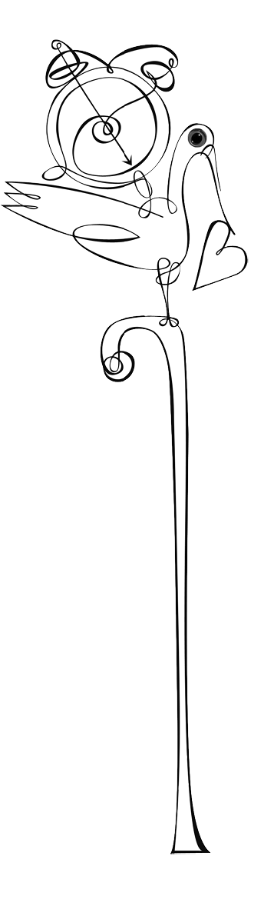
HAYAT YOLDA OLMAKTIR
“Geçmiş olan geçip gitmiştir; geçmiş, gelmek üzeredir.” Heidegger’in bu sözü, insana ilk bakışta tuhaf görünüyor. Cümlenin ilk kısmında sorun yok, geçmiş geçip gitmiştir. Ama peki gelmekte olmasına ne demeli? İnsanın saat zamanı ile anlattığı hikâyelerin zamanı, birbiriyle örtüşmüyor. Zaman tecrübemiz, içimizdeki hikâye ile içinde yaşadığımız daha geniş hikâye arasındaki gerilime tâbi. İç deneyimimiz bize geçip gitmiş olan yılları anlatmıyor. Çizer Eflatun Nuri bir söyleşisinde şöyle bir şeyden bahsediyordu, aklımda kaldığı kadarıyla: “Bir trenin penceresinden gözüm güzel bir kıza takılmıştı. Tren hareket edince onu daha fazla görebilmek için geriye yürüyor, tren camından onu seyrediyordum, ta ki bir aynaya rast gelip de kendi yüzümü görene kadar. O görüntüyle birlikte genç bir delikanlı değil de altmışlı yaşlarda bir ihtiyar olduğumu fark ettim.” Hiç kimse kendisinin yaşlandığına inanmaz. Sağlığımız yerindeyken yaşlılığın yaklaştığını tecrübe etmeyiz. Aslında yaşlanma sürecinin etkilerini algılarız; içten içe yaşlandığımızın farkındayızdır. Ama ölüm gerçeğinden kaçmak için zamanı yok sayarız.
Istırabını bir anlam üzere yaşayanların hayatında trajedilerden zaferler tomurcuklanır. “Yenilgi yenilgi büyüyen bir zafer vardır.” Suçluluk duygusu pişmanlığa ve ötekine hizmet bilincine; ölümün kaçınılmazlığını kabullenmek, hayatı daha anlamlı kılma gayretine dönüşebilir.
Varoluşsal anlamın merkezinde zaman var. Yaşanan ‘her an kırk bin yılın meyvesi’dir. ‘Ânı yakalamak’tan söz edilir, ‘ânın oğulları’ olmaktan bahis açılır. Geçmiş, kişinin bugününün her noktasında aktif varoluşunu bilinçdışında sürdürür. Ve her bir bugün dünün, şu ânın ve geleceğin bölünmez bir kümesidir. İnsan zamanı elden geçirilmiş, üzerinde oynanmış bir zamandır. Hayatlarımız hakkında anlattığımız hikâyelerle hayatımızın yönü ve akışı da değişebilir. Bugünün anlam ve metaforlarından bakarak geçmişi yeniden inşa ediyoruz. O halde geçmiş gelmek üzeredir, zira geçmiş her zaman yeni anlamlara açıktır. Yaşlı insanlarla yapılan çalışmalarda gösterilmiş ki, geçmiş, sadece bugünle etkileşim halinde hatırlanırsa vardır. Sözün özü, geçmiş bugünümüze hizmet edecek şekilde yeniden yapılır ve hikâye edilir.
Zaman geçiyor: “Günler gelip geçmekteler/Kuşlar gibi uçmaktalar…” Geçenlerde bir dostum, başka bir müşterek dostumuza uğramış, yaşça ve başça bizden ileride olanın ilk sözü, “Zaman daralıyor” olmuş. Zaman daralıyor. İyi şeyleri yapmak için acele etmeli. Kendi ömrümüzü ve sevdiklerimizin ömrünü güzelleştirmek için yarışmalı. Bir fidan dikmeli. Kuruyan bir ağaca su vermeli. Ânın evlatları olmalı. İnsanlara tebessüm etmeli. Güzellik ve iyiliği dile getirmeli, olmuyorsa susmalı. Ölüme, o ‘küçük kıyamet’e hazırlanmalı.
Istırap, suçluluk ve ölüm. Viktor Frankl, bunlara ‘trajik üçlü’ diyor. Her insan hayatının bir döneminde ıstırap, suçluluk ve ölümle yüzleşir. Onlar tarafından sınanır. Onlarla nasıl yüzleştiğimiz, bu karşılaşmadan ne tür bir anlam devşirdiğimizi de belirler. Istırabını bir anlam üzere yaşayanların hayatında trajedilerden zaferler tomurcuklanır. “Yenilgi yenilgi büyüyen bir zafer vardır.” Suçluluk duygusu pişmanlığa ve ötekine hizmet bilincine; ölümün kaçınılmazlığını kabullenmek, hayatı daha anlamlı kılma gayretine dönüşebilir. Homo paciens, ıstırap insanı, ‘acıyı bal eyleyen’ insandır. Istırapta bir anlam bulabilen insanlar ona daha kolay tahammül ederler.
Kendi ölümlülüğünün, sonlu hayatının farkında olan tek varlık insandır. Bugün geçmişe ışıklarını düşürdüğünde, kendimizi ‘kader kurbanı’ olarak mı göreceğiz yoksa “Acılarımdan öğrendiğim bir şeyler var” mı diyeceğiz? Geriye dönüp baktığımızda, “içimizde yaşanmadan bekleyen bir hayat”ın suçunu mu duyacağız yoksa “Her şey ben yaşarken oldu, bunu bilsin insanlar” mı diyeceğiz?
Istırap insan içindir. Onun tecrübesiyle büyür ve adam oluruz. Suçluluk hissi, ar damarı çatlamamış insanlar için bir nimettir. Böylece hatalarımızdan geri döner ve onu yaratıcı/yapıcı bir oluş hamlesine çevirebiliriz. Ve nihayet ölüm, bize nasıl yaşamamız gerektiğini bıkmadan her gün hatırlatır. Istırap insanı için zafer, seferin ta kendisidir. Hayat yolda olmak demektir, o kadar ki, geçmiş bile yerinde durmaz, bugüne ve bugünden hareketlenir.
MODERN MUTSUZLUK
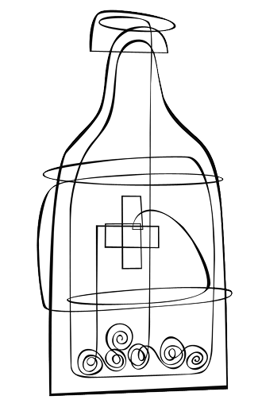
MODERN SALGINLAR
“Kadere karşı sigortalanmak.” Karen Blixen, Avrupalının arzusunu böyle betimliyordu. Oysa Afrikalı onu doğallıkla kabulleniyor, buyur ediyordu. “Ölebilenler, özgürce yaşar” diye eklemişti yazar. Günümüzde doğum, ölüm, yaşlanma, cinsellik veya mutsuzluk gibi sıradan hayat süreçleri tıbbileştiriliyor. Artık rahiplerin veya imamların buyruklarıyla değil, hekimlerin, diyet uzmanlarının, terapistlerin önerileriyle hayatlarımızı şekillendiriyoruz.
Gündelik hayatın sorun ve sıkıntılarının tahammülfersa bulunduğu eşik giderek düşüyor. Hayat standardı konusundaki beklentiler yükseliyor. Sorunların çözülebilir olmasını istiyoruz. Ölüm bile çözülmesi gereken bir sorun olarak ortada duruyor. Önceki çağlarda hayatın doğal bir parçası olan bedensel ve ruhsal belirtiler, bugün kaygı nedenimiz. Ağrı ve yorgunluk, geçen yüzyıl başından bugüne aynı. Ancak insanlar günümüzde bedenlerinden aldıkları sinyallere daha duyarlı ve bu sinyalleri bir hastalığa atfetme konusunda daha aceleci.
Oysa sağlık, Ivan Illich’in on yıllar önce büyük bir öngörüyle dile getirdiği gibi, insanın ölüm, acı ve hastalık gibi gerçeklerle başa çıkabilme yetisidir. Modern tıp ise bunları yok etmek için adeta bir ‘kutsal savaş’ ilan etmiş durumda. İnsanların modern hayatta yaşadıkları mutsuzluk, yeni histeri salgınları yaratıyor. Kronik yorgunluk, huzursuz barsak, fibromiyalji, tıbben açıklanamayan bedensel belirtiler gibi bir dizi yaygın durum, hastalık ile hastalık olmayan arasındaki gri bölgede duruyor. Bunlar, modern salgınlar ve ortaya çıkmaları yaşama biçimlerimizle çok alakalı. Rekabetçi, mükemmeliyetçi, zaman baskısı hisseden, içsel huzur duygusunu yakalayamamış insanlar, bu müphem sendromlara daha fazla yakalanıyorlar.
Dünya üzerinde beş yüz milyar dolarlık bir hacme ulaşan ilaç endüstrisi gözünü ‘fethedilmemiş topraklar’a, sağlıklı insana dikmiş durumda. Hastalık kavramı günbegün genişletilerek, sağlıklı insanlar hasta olduklarına ikna ediliyor.
Modernlikle birlikte değişim hızı da artmış durumda. Bu da, insanların kendilerini yetersizlik duygularına kaptırmalarına yol açıyor. Zihinsel, bedensel ve duygusal olarak bir şeylere yetişememe duygusu, modern insanın içini kemiriyor. Hız karşısındaki bu çözünme hali, kliniklerde karşımıza yaygın mutsuzluk, ağrı ve yorgunluk şikâyetleriyle geliyor. Tanı kategorileri, bedenimizdeki fizyolojik veya biyokimyasal olayların birebir yansıması değil. Hastalıklar sosyal olarak da inşa edilebiliyor. Günün kültürel değerlerini ve sosyal şifrelerini, sınıf ve cinsiyet yapılarını, birey ve toplum arasında beklenen münasebetleri de yansıtıyorlar. Bir yüzyıl önce ABD’de, ‘efendi’lerinden kaçan siyah kölelerin akıl hastası olduğu düşünülüyordu.
Önceki çağlarda hayatın doğal bir parçası olan bedensel ve ruhsal belirtiler, bugün kaygı nedenimiz. Ağrı ve yorgunluk, geçen yüzyıl başından bugüne aynı. Ancak insanlar günümüzde bedenlerinden aldıkları sinyallere daha duyarlı ve bu sinyalleri bir hastalığa atfetme konusunda daha aceleciler.
Dünya üzerinde beş yüz milyar dolarlık bir hacme ulaşan ilaç endüstrisi gözünü ‘fethedilmemiş topraklar’a, sağlıklı insana dikmiş durumda. Hastalık kavramı günbegün genişletilerek, sağlıklı insanlar hasta olduklarına ikna ediliyor. Dünün mahcup çocukları, bugün toplumsal endişe bozukluğu tanısıyla ilaç alıyor. Sokaklarda özgürce tepinemediği için kurtlarını evde döken çocukların bir kısmına hiperaktif yaftası yapıştırılıveriyor. Hastalığın kendisini sınırlayan bir tarzı olması, iyi huylu seyretmesi veya kişisel başa çıkma stratejileri gözden kaçırılıyor. Hastalık ticareti, sıradan sıkıntıları tıbbi sorunlara dönüştürüyor; hafif belirtileri ciddi olanlara, kişisel sorunları tıbbi belirtilere, riskleri hastalıklara tahvil ediyor. Bugün tıp dergilerinde, ilaç şirketlerinin ürettikleri bilginin yerini bağımsız odakların ürettiği bilginin alması tartışılıyor. Çünkü bir çalışmada gösterildiği gibi, bir ilacın etkinliğini belirleyen en önemli değişken, o çalışmanın sponsor firması.
Geçtiğimiz yüzyılda halk sağlığı alanında büyük gelişmeler yaşanmış olmasına karşın, araştırmalar, bizim atalarımızdan daha fazla ve daha kötü tıbbi belirtilere sahip olduğumuzu gösteriyor. Sağlığın sadece dışarıdan alacağımız ilaçlarla sağlanmayacağını, sağlık için insanın etkin bir mücadele vermesi gerektiğini, sağlığın bizim çabamızı gerektiren bir şey olduğunu akılda tutmalıyız.
Kadere karşı sigortalanamayız. Istırap bir öğretmen. Tahammül ve direnç, insanın erdemleri. Bir ağrıyı bedenimizde gezdirip dinlendirerek de olgunlaşırız. Bir hüzün nöbetinden güçlenerek de çıkabiliriz. Ve nihayet hayat, çözülmesi gereken bir sorun değildir.
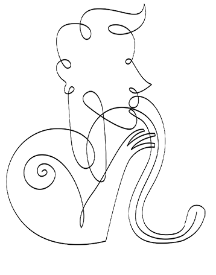
KÖTÜLÜĞÜN SIRADANLIĞI
Yeryüzünde neden kötülük var? Safça bir soru olduğunun farkındayım ama ruh sağlığı disiplinleri de bu sorunun cevabını arıyor. Kötülük hepimizin bildiği üzere tek başına cereyan etmiyor. Onun ortaya çıkması için bir zalim ve bir kurban, çoğu zaman da tanıklar gerekiyor. Kötülük, sosyal olarak icra edilen bir şey.
Sosyal psikolog Roy Baumeister kötülüğün kaynağında dört sebep görüyor: İlki, para veya iktidar anlamında maddi kazanç sağlamak. Bu durumda kötülüğü ayırt etmemizi sağlayan şey, amaçlar değil kullanılan araçlar. Kişi parayı ele geçirmek için saldırganlığa başvurur veya gayriahlaki yöntemler kullanır çünkü meşru yöntemlerle başarıya ulaşamayacağına inanır. Kötülüğün ikinci kaynağı, kişinin bencilliğinin tehdit edildiğini hissetmesidir. Katiller, suçlular, psikopatlar yüksek özsaygıya sahip kimselerdir. Bu kişilerin kendileri hakkında sahip oldukları olumlu benlik imgesi sorgulandığında saldırganlık ortaya çıkabilir. Şiddete en çok eğilimli insanlar ego tehditlerine en duyarlı insanlardır, özellikle de kendi değerleri hakkında şişmiş, fazlasıyla ‘uçmuş’ kanaatlere sahip olanlardır. Çoğu zaman şiddet, ego tehdidinin kaynağına yönelir, onu susturmak, yıldırmak, cezalandırmak ister.
Saldırgan dürtüler normalde iç yasaklamalarla kısıtlanır. Kötülük, iç kısıtlamanın zayıfladığı, iç frenlerin tutmadığı durum ve zamanlarda ortaya çıkar. İçinde yaşadığımız kültür bize ‘cinnet ânında’ suç işlemenin mümkün olduğunu öğretiyor. Kötülük, aldığı ufak onaylarla önce küçük adımlar atıp sonra büsbütün kontrolden çıkabiliyor.
Kötülüğün bir diğer kaynağı, idealizmdir. İnsanlar kendilerini iyinin mutlak savaşçıları, iyinin yegâne temsilcisi saymaya başlamışlarsa, hasım olarak gördükleri insan ve gruplara her türlü kötülüğü yapabilme hakkını kendilerine verirler. Soylu hedefler uğruna saldırganlık ve şiddet kullanmayı meşrulaştırırlar. Gerçekte kullanılan yöntem ve araçlar, o sözüm ona soylu amaçların itibarını zedeler, onları kirletirse de bunu görmemeyi yeğlerler. Gruplar içine yerleşip kendisini ‘iyi’, ötekini ‘kötü’ olarak tanımlamak insanın doğasında var. Grup rekabeti her zaman zalimce bir çatışmaya dönme ihtimalini içinde taşır. Dördüncü bir kötülük kaynağı da sadistik zevktir. Ancak zarar vermekten hoşlanan insanlar kötülük işleyenlerin küçük bir oranını oluşturur.
Saldırgan dürtüler normalde iç yasaklamalarla kısıtlanır. Kötülük, iç kısıtlamanın zayıfladığı, iç frenlerin tutmadığı durum ve zamanlarda ortaya çıkar. İçinde yaşadığımız kültür bize ‘cinnet ânında’ suç işlemenin mümkün olduğunu öğretiyor. Duygusal alt üst oluşların kendimizi denetleme duygusunu ortadan kaldırabileceğini kabulleniyoruz. Kötülük, aldığı ufak onaylarla önce küçük adımlar atıp sonra büsbütün kontrolden çıkabiliyor. Aslında başka bir insana zarar vermek, çoğu zaman insana kendisini kötü hissettiren bir durum. O halde kötülüğü işleyen kişi hemen kendisine bir bahane, bir mazeret üretiyor. Böylece yaptıklarının kabul edilebilir olduğunu düşünüp nahoş duygulardan uzaklaşmak istiyor.
Saldırganlık ve şiddet sadece kalıtım ve içgüdülerle açıklanamaz. Saldırganlık büyük ölçüde öğrenilmiş bir davranıştır ve çoğu zaman da duruma özgüdür. Tuhaf olan, insanın uygarlık sürecinin kötülüğü azaltmak yerine çoğaltmasıdır.
Kötülük işleyen insanların ne kadar sıradan insanlar oldukları, pek çok zaman iyi bir komşu, müşfik bir aile babası gibi göründükleri dile getirilir. İnsanların dışa yansıyan kötülük işaretlerinin olmaması çoğumuza şaşırtıcı gelir. Nasıl olur da arkadaşlarına, çevresine, komşularına normal görünen bir kişi akıl almaz cinayetler işler, değil mi? Hannah Arendt ünlü Nazi Adolf Eichmann’ı gözlemleyerek ‘kötülüğün banalliği’nden bahsetmişti. Herkes insan biçiminde bir şeytan beklerken sıradan bir insan çıkmıştı ortaya. Sıradanlığı adeta hayal kırıklığı yaratıyordu. Bir kitle katliamcısından beklenmeyecek kadar sıradan. Sanki otobüste yan yana oturduğunuz, göz ucuyla bir bakıp unuttuğunuz yüzlerden biri gibi. Banalliğin asıl şoku, kişi ve suç arasındaki oransızlıktır.
İnsan doğası mı yoksa içinde yaşadığımız kültür mü, şiddet ve saldırganlığı arttırıyor? Saldırganlık ve şiddet sadece kalıtım ve içgüdülerle açıklanamaz. Saldırganlık büyük ölçüde öğrenilmiş bir davranıştır ve çoğu zaman da duruma özgüdür. Tuhaf olan insanın uygarlık sürecinin kötülüğü azaltmak yerine çoğaltmasıdır. Çünkü modern ahlak bencilliği kınamıyor, alçakgönüllülüğe cevaz vermiyor. Gelecek kuşaklar, giderek yoğunlaşan çevre kirlenmesiyle birlikte bizim kurbanlarımız olarak dünyaya gelecekler. Uygarlık dediğimiz şeyin insanın iç denetimi üzerinde yükseldiğini söyleyen Freud’un kemikleri sızlıyor olmalı!
Kötülüğün kol gezdiği bir iklimde, Türkiye’nin gençleri de hanidir hançeri birbirlerine saplıyorlar. Erkeklik davası mı bu? Hançer saplamak gençliğin bizim artık aşinası olamadığımız yeni âleminde yetişkinliğe geçişin bir ritüeli mi? Bir hançer saplayarak, bir başkasının canını acıtarak, bir başkasını yok ederek, bir aileyi acılara gömerek var olmak ancak psikopatlığın raconuna uyar. Türkiye’de, izleyebildiğim kadarıyla, gençler arasında psikopatik arsızlık ve acımasızlık tırmanıyor ve erkekliğin kitabı antisosyalliğin, zalimliğin, kan dökücülüğün kitabına uydurularak yeniden yazılıyor. Vahşi hayvanlar gibi, en çok can acıtanın ‘en erkek’ sayıldığı bir cangılda mı yaşayacağız?
Bu durumu, basitçe bazı televizyon yapımlarına bağlamak sorunu küçümsemek olur. Türkiye’nin gençleri bir ümitsizlik duygusundan mustarip. Gençler geleceğe baktıklarında bir ışık görmek istiyorlar, bir iş bulabileceklerine, kendi hayatlarını yazabileceklerine, sevip sevilebileceklerine dair bir ümit ışığı. Oysa hayat onlar için her geçen gün daha fazla zorlaşıyor. Anne babalarının televizyon karşısında uyuklamaktan yeterince sevgi veremediği bir kuşak, bir kanser hücresi gibi hızla ülkeyi istila ediyor. Geçtiği yerlere sevgisizliğin tohumlarını, şefkat görmemişliğin zehirli havasını bırakarak. Zamanımızı, dikkatimizi, varlığımızı onlardan esirgediğimiz için, şimdi onlar büyük bir boşlukta asılı kalmış durumdalar. Onlara bağlanabilecekleri bir değer, yüreklerini tutuşturan bir ülkü, hayatlarını gülistana çevirecek bir anlam sunamadığımız ve kendimiz gibi onları da televizyon ekranı karşısında yalnız bıraktığımız için.
Video oyunları akıl almaz bir şiddete gömülü, televizyon yapımlarında sinek gibi insan öldürülüyor, gün geçmiyor ki dışarıdaki dünyadan bir vahşet haberi ulaşmasın. Ümitsiz bir dünyada hak aramanın yegâne yönteminin şiddet olduğunu düşünerek yetişen bir kuşak karşısındayız. Onları hayata bağlayacak, bir yön ve anlam duygusu verebilecek şey, birlikte yapacağımız konuşmayı zenginleştirmek, onlarla hikâyeleri ve hayalleri paylaşmak olabilir. Çocuklarımıza hikâye anlatmalı, onları hikâyelerle emzirmeliyiz. Anlattığımız hikâyeler onları anonim bir dünyada yurtsuz kalmaktan kurtaracaktır. Onlara bir aidiyet hissi verecek; başları sıkıştığında, uzaklarda üşüdüklerinde, bu hikâyelere iltica edebileceklerdir. Bir hikâyeyi paylaşmak aynı hayallerle ısınmaktır, birlikte düş görme temrinleri yapmaktır.
Türkiye’de, izleyebildiğim kadarıyla, gençler arasında psikopatik arsızlık ve acımasızlık tırmanıyor ve erkekliğin kitabı antisosyalliğin, zalimliğin, kan dökücülüğün kitabına uydurularak yeniden yazılıyor.

‘YIKILMA SAKIN!’
Normal şartlar altında ahlaklılık, erdem ve idealizm insanı başkalarına zarar vermekten alıkoyan iç frenlerdir. Ahlaklılık özdenetimi destekler ve böylece kötülüğün yayılmasını önler. Ancak kimileyin, hayatımızı adadığımız ülküler bizi zalimliğin sularına sürükler, yüce idealimiz adına başkalarını incitmek, sadece kabul edilebilir bir şey değil aynı zamanda kutsal bir görev de oluverir.
Yeryüzünün tarihi, amaçlar araçları mubah kılar parolasıyla, sözüm ona haklı amaçlar uğruna işlenmiş cinayetlerle dolu. Doğruluğu şaşmaz bir biçimde sadece kendi üzerlerinden tanımlayan ve hakikati sadece kendi mülkü sayanlar, kendilerine muhalefet eden veya engel olan her düşünceyi yok edilmesi gereken düşmanlar olarak görürler. Onlara kalırsa, ‘bizimle olmayan bize karşıdır’.
İdealleri çıkış noktası yaparak kötülüğe ulaşanlar çoğu zaman gruplardır. Çevrenizde size yürüdüğünüz yolun doğru olduğunu söyleyen insanlar olursa, yüce amaçlar için saldırganca yöntemler kullanmanın meşruiyetine daha kolay inanırsınız. Gruplar, hemen her zaman kendi bireysel üyelerinin toplamından daha aşırıdır. Düşmanlık ettiğiniz şeyin bir grup olması durumunda, bir bireye davranacağınızdan daha acımasız bir tavra bürünebilirsiniz. Kötülüğe meyleden gruplar içlerindeki şüphe ve muhalefeti kolayca bastırır, bastırmadıklarında farklı sesleri hainlikle yaftalar ve cezalandırırlar. Fransız Devrimi’nde giyotinin en çok ‘iç düşman’lar için kullanıldığını hatırlayalım. Bir yerlerden aklımda kalmış bir cümle: “Kellesini ipten zar zor kurtarmış adamın zalimliğinden kork.” Her devrim, her ideoloji kendi hain kadrolarını istihdam eder.
İdealleri çıkış noktası yaparak kötülüğe ulaşanlar çoğu zaman gruplardır. Çevrenizde size yürüdüğünüz yolun doğru olduğunu söyleyen insanlar olursa, yüce amaçlar için saldırganca yöntemler kullanmanın meşruiyetine daha kolay inanırsınız. Düşmanlık ettiğiniz şeyin bir grup olması durumunda, bir bireye davranacağınızdan daha acımasız bir tavra bürünebilirsiniz.
Günümüzün kapitalist toplumu vicdan yoksunluğunu bir değer olarak öne çıkarıyor, antisosyal acımasızlığı bir hayatta kalma stratejisi olarak öneriyor. Acımasızlık, dürtüsellik ve empati yoksunluğu bizi ötekini hissetmekten alıkoyuyor ve ‘güçlü olan ayakta kalır’ düşüncesi insanları kurban olmak ile zalim olmak arasında bir seçime zorluyor. Değer boşluğu, antisosyal kişiliğin gelişimi için en uygun fideliktir, her şeyin hızla değiştiği bir dünyada eski değerler erozyona uğrarken insanlara rehberlik edecek yeni değerler oluşmayabilmektedir.
Antisosyal kişiliklerin uç ideolojilerde, buhran dönemlerinde, savaşta veya devrimlerde bir kahraman mertebesine yükseldiğini görebiliriz. Antisosyal liderlerin en bilinen örneği olan Hitler’in, Almanya’da anne ve babanın fabrikalarda uzun saatler geçirdiği, bütün bir ulusun baba yoksunluğu çektiği bir dönemde ortaya çıktığı ve ulusun baba özlemini karşıladığı dile getirilmiştir. Dediği dedik, otoriter ve evin yüceliğini dile getiren bir baba. Gruplar en ateşli müntesiplerini ödüllendirme eğilimindedirler. Kurnaz antisosyaller dava arkadaşlarını ölüme sürer veya banka hortumlar, ellerini kollarını sallayarak dışarıda keyif çatarken, akılsızlar gasp ve cinayetten hapiste yatar. Sınıflı toplum, kişilik bozukluğu filan tanımaz.
Günümüzün kapitalist toplumu vicdan yoksunluğunu bir değer olarak öne çıkarıyor, antisosyal acımasızlığı bir hayatta kalma stratejisi olarak öneriyor. Acımasızlık, dürtüsellik ve empati yoksunluğu bizi ötekini hissetmekten alıkoyuyor ve ‘güçlü olan ayakta kalır’ düşüncesi insanları kurban olmak ile zalim olmak arasında bir seçime zorluyor.
Sıradan kötülük tırmanıyor. Bu ülkede görmeye alışık olmadığımız oranda şiddet ve kötülük görüyoruz. Vandallık, barbarlık ve zalimlik merhametin topraklarını talan ediyor. Artık kendi hikâyelerimiz emzirmiyor bizi, Hollywood hayal endüstrisi beyin hücrelerimizi işgal ediyor. İnsan tabiatının özde merhametle dokunduğunu söyleyen Doğu öğretilerinin aksine, Batı geleneği, insan tabiatının özünde zalim olduğuna inanır. İnsan, bu görüşe göre, kötü mizaçlı bir varlıktır. Batının binlerce yıllık tarihi; kitle halinde çarmıha germeler, işkence odalarının icadı, dünya savaşları, soykırım, etnik temizlik gibi günahlarla tıka basa dolu. Tamahkârlık, köle ticaretini yeşertmiş ve yerli halkların boyun eğdirilip acımasızca sömürülmesine yol açmıştır. Eğlenceler, zalimlik karşısında büyülenmişliğin izlerini taşır, gladyatör oyunlarından Hollywood’un modern fantezilerine dek zalimlik, imgelemi zapt eder. O halde ne yapmalı?
Sayısız araştırma ekranlarda görülen şiddetle gerçek hayatta şiddete yönelme arasında bağ kuruyor. Yaşadığımız zaman diliminde çocuklarımıza yapabileceğimiz iyiliklerden birisi, onları televizyon veya bilgisayarın değil gerçek hayatın sesiyle buluşturmaktır. Onlarla hayatı gezebilir, insanları ve sokakları tanıyabilirsiniz. Biraz tuhaf görünmek pahasına da olsa şunu öneriyorum: Onlarla akıl hastanelerini, huzurevlerini, yetiştirme yurtlarını, mülksüzlerin yaşadığı sokakları, camileri, havraları ve kiliseleri gezin. Birlikte çarşıları, pazarları, aktarları dolaşın. Gerçek hayatın nasıl bir şey olduğunu ve ıstırabın gerçek bir insana değdiğinde ne yapabileceğini onlara gösterin. Gerçek hayatın nerelerde soluk alıp verdiğini, insanların nelere gülüp nelere üzüldüğünü, gerçek hayatın seslerinin neye benzediğini onlara öğretin.
Her insan kendisine bir yurt arar. İnsan daima sıla özlemi içindedir, sevgiyi ve şefkati arar. Daüssıla, memleket özlemi, kana kana içtiğimiz bir sevgi ve merhamet arayışından başka nedir ki? Çevremizde arsızca yükseldiğini gördüğümüz kural tanımazlık ve zalimlik, ancak şefkatin duvarlarına çarpmakla durdurulabilir. Şefkat evlerimizde, işlerimizde, ilişkilerimizde hükümferma olduğunda, en başta çocuklarımızı layık oldukları gibi sevebilmeyi öğrendiğimizde, onlara “Yıkılma sakın!” diyebiliriz. Ancak layığınca sevilmiş çocuklar bıçağın kanatabileceğini, kötü bir sözün can yakabileceğini bilebilir. Kâinatı, yurdunu, insanlarını sevebilen anne babalar; çocuklarını hayatın seslerine açabilen anne babalar başkasını incitmenin bir insan için ne büyük bir zillet olduğunu anlatabilir. Çocuklarımıza şefkati, merhamet ve yârenliği öğretmeliyiz. Dikkatin daha fazlası duyguların eğitimine verilmeli. Şefkat ve merhamete dayalı bir eğitim, öteki için de sorumluluk duymayı, ötekinin de ilgi, iyilik ve adaleti hak ettiğini kabullenmeyi beraberinde getirir. Başkasını düşünebilmek, başkasının iyiliğinden kendisini mesul hissetmek, çocuklarımıza verebileceğimiz yüce değerlerdir.
Ancak layığınca sevilmiş çocuklar bıçağın kanatabileceğini, kötü bir sözün can yakabileceğini bilebilir. Kâinatı, yurdunu, insanlarını sevebilen anne babalar; çocuklarını hayatın seslerine açabilen anne babalar başkasını incitmenin bir insan için ne büyük bir zillet olduğunu anlatabilir.
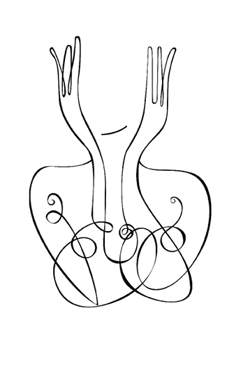
KIRILGAN KIZLAR KULÜBÜ
Bir ses etseniz uçuşup gidecekler. Kazara bir sözcük düşürseniz yere, onun boşluktaki hışırtısıyla kaçışacaklar saklandıkları kovuklara. Her cümlenin özenle kurulması gerek; ses tonunuz sessizlikle mırıltı arasında gidip gelmeli ki incinmesinler. Onlar, hayat meydan savaşına çıkmadan kendilerini mağlup ilan eden kızlar. Gönüllü mağlupları hayatın.
Kâh yorganı başlarına çeker, kâh kendilerini eve ve sürgit bir mutsuzluğa hapseder ve bir istiğna makamında yaşarlar. İsterler ki bir ses, bir yürek onları bulsun ve çocukluğun o sert kışından çekip çıkarsın. Yeterince soğuk yemişlerdir, isterler ki bir yürek onları sarmalasın ve sıcaklığıyla ısıtsın. Sadece böyle bir karşılaşma onları hayata çıkarabilir. İncinmiş bir çocukluk, ancak bir başkasına yaslanarak, sendelediğinde mutlaka orada yanı başında olacağını bildikleri bir yürek değneği ile şifa bulacaktır. Kayıtsız şartsız bir anne, varlığını ona sunan bir âşık, ürkekliğin dilini konuşabilen bir insan. Hayat hep kendimize doğru bir yolculuktur.
Onlar çocukluğun o sert kışında dünyanın tehditkâr bir yer olduğu bilgisini edinir. Ruhun karanlığı derinleşir. O derinlik, kendisine mahsus bir neşe üretmekte gecikmez. Acıyla teselli bulmanın neşesi. Maruz kaldıkları her türlü duyarsızlık, dünyanın tekinsizliğini doğrulayan bir kayıt olarak bireysel tarihe not düşülür. Dünya kötüdür ve ondan saklanmak gerekir. Nihilizmin o serin kuyusunda, eylemsiz durarak, dünyaya bir bildiri bırakılır. Hayattan öğrenecekleri her yeni şeyin, yeni darbeler yemekle olabileceği sezgisiyle insandan uzak yaşanır. Kötülükten kendini sakınamayan kızlar, yiğit bir adamın çıkıp da onları serazat sevemediği kızlar, kırılgan kızlar. Mesafe ve kayıtsızlığın zırhıyla, hayatın mızraklarından korunanlar.
İncinmiş bir çocukluk, ancak bir başkasına yaslanarak, sendelediğinde mutlaka orada yanı başında olacağını bildikleri bir yürek değneği ile şifa bulacaktır. Kayıtsız şartsız bir anne, varlığını ona sunan bir âşık, ürkekliğin dilini konuşabilen bir insan.
Onların birkaçını tanıdım. O zırh, ruhun yaralarının bağladığı bir kabuk gibi, onlara ulaşmanızı engeller. Cerahatli yarada yol alan bir cerrah gibi, ustaca sokulmalısınız o sisli geçmişin sokaklarına. Sevilme açlığının açtığı yaralar narindir. Düşünmeden ve hissedilmeden söylenmiş her söz, o yaraya tuz basar. Orada ancak sahici bir insan olabilirseniz, onun yaraları kadar sahici durabilirseniz, kendi yaralarınızla yüzleşecek kadar bir cesaretiniz varsa, varsınız. Kuru nasihatler, ezberlenmiş cümleler, acının örsünde dövülmemiş yaşantılar ruhun yaralarına nüfuz etmez. Ancak kendi kırılganlığının sesini duyabilen birisi, o kırılgan kızları da işitir. İnsan bir başkasını en çok yaralarından tanır. Kendi yaralarından.
Kırılgan kızlarla konuşmak benim için iki türlü bir yolculuktur. Onları, ‘içlerinde var olduğunu bilmedikleri’ bir yere götürmek için, bir tür kılavuz kaptanlık yapmak zorundayımdır. Ruhun derin acısı, o ‘var olmayan yer’den yayılır. Orayla karşılaşmak acıyı hafifletmez belki ama bir farkına varış imkânı verir. Farkına varmakla anlam veririz. Bir acıyı anlamlandırabildiğimiz zaman, ruh eksik olanı ikmal eder; tamamlanır, olgunlaşır. O acıyı üreten yanlışları durmaksızın tekrarlamaktan vazgeçeriz.
Sevilme açlığının açtığı yaralar narindir. Düşünmeden ve hissedilmeden söylenmiş her söz, o yaraya tuz basar. Orada ancak sahici bir insan olabilirseniz, onun yaraları kadar sahici durabilirseniz, kendi yaralarınızla yüzleşecek kadar bir cesaretiniz varsa, varsınız.
Ve onlarla yürümek beni kendimle buluşturur. Hayatın türlü telaşı içinde kendime söylediğim yalanlarla, kendimden sakladığım gerçeklerle, kendime değmekten kaçındığım yerlerle buluşturur. Bazen onların öyküsünden ayrılarak kendi karanlığıma doğru giderim. O karanlıkta bulduğum bir yaşantı, geri döndüğümde, bana anlatılan öyküyü de anlamamı sağlar. Aslında ben kendi karanlığıma giderken, kendi yolumu yürür ve kendi kırılganlığımla yüzleşirken, ona doğru iz sürmüş olurum. Hayat bazen bir şifa verme çabasıdır. Ötekine, kendimize ve bütün varlığa.
Kırılgan kızlar ya terk edişin soylu dağında bir münzevi olur, ya da hayata bir yerinden katılır ve içlerinde zaman zaman nöbetler halinde dışarı vuran bir sızıyla yaşamayı sürdürürler. ‘Yaşamıyor gibi yaşamak’ sanatının ustasıdır onlar. Bir keşiş, yedi yüzyıldır mağarasında konaklayan bir bilgeyle karşılaşmış dağda. “Güzel insan” demiş ona, “neden şuraya bir ev yapıp da rahat etmiyorsun?” “Hayat çok kısa” diye cevap vermiş bilge, “yerleşmeye değmez.” Mağlupların bir bilgeliği vardır. Dünyanın mağlupları, dünyayı yerleşmeye değer bir yer olarak görmeyenlerdir.
Kırılgan kızlar işte biraz da bunun için kırılgandır.
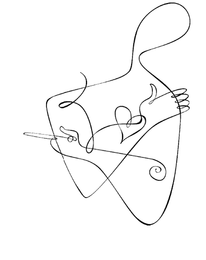
BURUKLUK
“Sanki bu dünyada yokum” diyor, “bazen var olduğumu hissetmek için kolumu ısırdığım, o acıyla birlikte bir insan olduğumu ve yaşadığımı anladığım oluyor.” Bir başkası, “Dünya bana sisler arasından görünüyor” diye betimliyor olan biteni, “her şey hayal ve gerçek arasında gidip geliyor.” Bir diğeri, “Dünyaya sanki bir dürbünün tersinden bakıyor gibiyim” diye özetliyor durumu.
Dinlediğim üç ayrı genç insandan odama düşen sesler bunlar. İçimde uğuldayan, anlamaya çalıştığım sesler. Görünen o ki, dünyaya ve kendine yabancılaşma hali, giderek daha çok insanı esir alıyor. O yakıcı ıstırap, ruhun derinlerine kök salıyor ve insan o duygudan sonra bırakın dünyayı, kendi bedenini bile yurt edinmiyor. Varlığın buruk tadı.
Depresif kişi, kimileyin hakikati bütün çıplaklığıyla gördüğü için acı çeker. Orada hayatı idame ettirmeye yarayan kandırmacalar sökmez. ‘Olumlu yanılsamalar’ melankoli ülkesinde işlemez. Her yerde hüküm süren acı, ruhun karanlığında daha kolay seçilir hale gelir. Malihulya gibi endişe de hayatla ilişkimizi bozar. Mesleğimizin pirleri, endişenin tümünün önünde sonunda ayrılık endişesinden kaynaklandığını söylemişlerdi. Yalnızlık, yani ayrılığın farkında oluş, bugün endişelerin en acı verici olanı. Fikret gibi, “Kendi cevvim, kendi eflakimde kendim tairim/ kendi yörüngemde, kendi ufuklarımda, kendim uçarım” diyememek. Herkes gibi olarak, içinde yaşadığı topluma benzeyerek var olduklarını düşünenler de yalnız olabilir. Uyum sağlayan/konformist kişi, kendi kişisel kimliğini feda etmek ve benliğini silmek pahasına sürüye katılır. Yolların çatallandığı noktalarda ben diyememek ve sürüyle birlikte yol almak, kişinin iç boşluğunu büyütür ve daha büyük yalnızlıklar doğurur.
Depresif kişi, kimileyin hakikati bütün çıplaklığıyla gördüğü için acı çeker. Orada hayatı idame ettirmeye yarayan kandırmacalar sökmez. ‘Olumlu yanılsamalar’ melankoli ülkesinde işlemez. Her yerde hüküm süren acı, ruhun karanlığında daha kolay seçilir hale gelir.
İnsan, fark edilmek ister. Oysa giderek aynılaşan ve anonimleşen bir dünyada, fark edilmek zorlaşmıştır. Bir süre önce Boğaz Köprüsü’nden atlayarak intihar eden bir genç kız, “Yavaş yavaş delirdim ve siz fark etmediniz” diyordu. Dünyaya gönderilen bir sitem oku. Yalnızlık ve kayıtsızlığı aşabilmek için pek çok genç cinselliği kullanır. Bedensel yakınlık kişisel ilişkinin yerine konulmaya çalışılır. Ruhunu katmadan, kendini adamadan, aidiyetten uzak cinsellik, Rollo May’in harika ifadesiyle, “Duyarlılık olmadan duyum ve mahremiyet olmadan birleşme” ile sonuçlanır.
Yabancılaşma evvelemirde modern insanın tabiattan kopuşuyla başlıyor. İnsan, tabiatı tahrip ediyor, onu gayrişahsî hale getiriyor, nesneleştiriyor ve sonunda ona diz çöktürmek, onu yağmalamak istiyor. Kendimizi daha geniş bir bütünün parçası saymıyor, tabiatla aramıza duvarlar örüyoruz. O duvarlar sonra bizim zindanımız oluyor. Evren bir ahenk üzere var. Kaos kuramıyla, sisteme ufak girdilerin ne denli büyük çıktılara yol açabileceğini öğrenmiş bulunuyoruz. Özne ve nesne, ben ve dışarıdaki dünya arasındaki bu köktenci bölünmenin aşılması, akıl ile kalbin buluşması gerekiyor.
İnsan dili kötürüm ve kekeme bir hal almış durumda. Televizyonun uğultusu, cep telefonunun zırıltısı, hayatın telaşı sahici bir konuşmayı giderek imkânsız hale getiriyor. Oysa insan hikâyeler anlatmak isteyen bir varlık.
İnsan yalnızlaşıyor. Şöyle dikkatlice etrafınıza bir bakın. Kaç kişi bir diğerini dikkatle dinliyor? Kaç kişi gönlünden geldiği gibi meramını ifade edebiliyor? İnsan dili kötürüm ve kekeme bir hal almış durumda. Televizyonun uğultusu, cep telefonunun zırıltısı, hayatın telaşı sahici bir konuşmayı giderek imkânsız hale getiriyor. Oysa insan hikâyeler anlatmak isteyen bir varlık. Anlattığı hikâyelerin yankılarını duymak isteyen, varoluşunu başkasının yüzünde seyretmek isteyen bir canlı. Can, dilde hayat buluyor. Düşünürün söylediği gibi, ‘dil varlığın evidir’.
İnsan yabancılaşıyor. Sadece ruhuna değil, bedenine de yabancılaşıyor. Dünya artık sisler arasından görünüyor. McDünya’da farklı olmak giderek zorlaşıyor. Bağımlılık ve özerklik, yakınlık ve mesafe, içini dökme ve korunaklı durma gibi ikilemler günümüz insanını çok fazla meşgul ediyor. İlişkilerin, aşkların, dostlukların ve hatta sohbetin bile kısa ömürlü ve sanal olduğu bir dünyada, insanların kendilerini gerçek olarak hissetmeleri zorlaşıyor. Ne dünya ne de kendileri gerçek. Her şey, ‘bir dürbünün tersinden bakıyor gibi’ bulanık.
Bulanık zamanlarda, buradayız demek için, galiba dişimizi ruhumuza geçirmemiz gerekiyor.
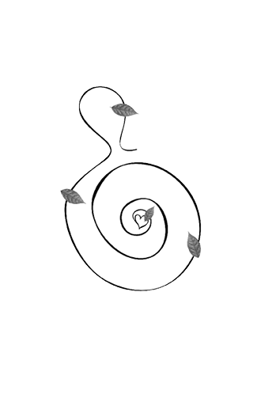
BOLLUK ÇAĞI
Türkiye’de yaklaşık yirmi yıldır ilginç gelişmeler yaşanıyor. Türk modernleşmesi yoğun bir bireyselleşme şeklinde tecelli ediyor. Bu topraklarda son on yılda bu kadar çok alışveriş merkezi, bu kadar çok spor merkezi açılıp bir o kadar çok roman yazılmaya başlandıysa, “Ne oluyor?” diye sormak zamanıdır.
Pek çok insan anlattığı hikâyenin çok önemli olduğuna ve mutlaka anlatılması gerektiğine inanıyor. Kaldı ki roman yazarlığının da ‘bir başarı öyküsü’ne tahvil edilebildiği günlerde yaşıyoruz. Roman yazabilmek için bir meselenizin olması gerekmiyor, büyük anlatıların kayıplara karıştığı bir zamanda zaten küçük hikâyeler öne çıkıyor. Faulkner’in meşhur Nobel konuşmasında, ruhun ıstırabı ve teriyle karıldığını söylediği romanın yerini, artık hayal mühendisliği almış durumda. Romanın ahlaki meseleleri yok artık; roman ‘kalbin kendi çelişkileri’nden beslenmiyor. Dostoyevski kahramanlarının o yakıcı varoluşsal meseleleri, insanın özünün sorgulandığı o peygamberî söylem bir kenara bırakıldı. Varsa yoksa şaşırtmaca ve kurgu, varsa yoksa mühendislik! Her şeyin ruhunu kaybettiği bir çağda, romanı eğlencelik bir televizyon dizisinden ayıran özellik kayboluyor ve edebiyat, ruhu ve meselesi olmayan, edebi metni oyuncağa çeviren, egoperest oyunbazların elinde can çekişiyor.
Bolluk çağının bir diğer göstergesi, alışveriş merkezleri. Modern çağın devasa mabetleri günbegün hayatımızda daha merkezi bir rol üstleniyor. Canlı, coşkulu, ele avuca sığmaz çarşıların yerini, soğuk ve kaba alışveriş merkezleri alıyor. Geçmişin ruhu, tarihin sesleri, sokakları dolaşan uğultu artık orada değil. Alışveriş merkezi her şeyin bir intizam histerisine uygun olarak kodlandığı, size alışveriş kadar sınırlı sorumlu bir eğlence de vaat eden yeni yaşama mekânına işaret ediyor. Alışveriş merkezi, arzu ile mal arasındaki boşluğu ortadan kaldırıyor.
Alışveriş merkezinde basit bir alışverişten fazlası vardır. Temel ihtiyaç maddelerini almak için girdiğiniz bakkalda fazla oyalanmaz, ihtiyaçlarınızı alır ve çıkar gidersiniz. Oysa alışveriş merkezinde etkinlikte bulunursunuz; yürür, vitrinlere bakar, çay kahve içer, sizin gibi orada bulunan diğer insanlarla ilgilenirsiniz. Sanki orada bulunmanızın temel sebebi alışveriş değilmiş gibi bir yanılsama yaratılır. “Almak zorunda değilsin”in baştan çıkarıcılığı ne fenadır!
Alışveriş merkezi bir baştan çıkarıcıdır, orada hem ilgi hem mesafe vardır. Yakınlık ve uzaklık. Sizi kolunuzdan tutup içeri çeken, zorlayan, “Malım iyi, al” diyen kimse yok. Görünür olup da kendini satmaya çalışmayan, arzuyu nasıl da kamçılar, değil mi?
Modern çağın devasa mabetleri günbegün hayatımızda daha merkezi bir rol üstleniyor. Canlı, coşkulu, ele avuca sığmaz çarşıların yerini, soğuk ve kaba alışveriş merkezleri alıyor. Alışveriş merkezi, arzu ile mal arasındaki boşluğu ortadan kaldırıyor.
Alışveriş ile bir kaçış rüyasına iltica ederiz. Zira gerçekliğin dünyası bize her zaman ödül sunmaz ve mükemmelliği sadece düşlerde bulabiliriz. Bir giysi, bir çift ayakkabı bize güzelliğin kapılarını aralar, bir anlığına dünyanın en güzel insanı oluveririz. Kendimizi kötü hissettiğimiz anlarda alışveriş bizi rahatlatır. Alışveriş, zamanımızın en büyük tesellisidir. Arzuyu doyurmak ve bunu çok çabuk yapmak, modern hayatın en temel hedeflerinden birisidir. Alışverişle Batı âleminin özgürlük takıntısı kendisine zararsız bir zemin bulur. Burada serbest seçim vardır. Burada kendi kaderini kontrol eder, kendini yapar, hayatını dönüştürürsün.
Alışveriş merkezi yeni agoradır, şehrin yeni meydanıdır artık. İnsanlar burada da görmek ve görülmek, hareket etmek ve karşılaşmak, aynı zamanda da önemli işlerini görmek isterler. Her şey renklidir, her şey hareket halinde ve dikkati çeler durumdadır.
Alışveriş merkezi ruhumuza pansuman yapar, çok şey vaat eder, her şeyi bir düş olarak sunar. Fakat orada merhametin tesellisi yoktur. Orada bir sükûnet, sessiz bir içe dönüş mekânı, bir düşünme adacığı bulamayız. Orada ibadethane veya kütüphane olmaz.
Görünen o ki bolluk çağı ruhun açlığını gidermiyor. Yalnız kalabalıklar, içlerinin sızısını dindirmek için alışveriş merkezlerinde geziniyor ve eğlencelik romanlar okuyor. Yalnızlık büyüyor. Ruhun açlığı da. Ama umut hep var. Sözü Faulkner’e bırakıyorum: “İnsan ölümsüzdür, sadece diğer varlıklar arasında yorulmaz bir sese sahip olduğu için değil, aynı zamanda bir ruhu; şefkate, fedakârlığa ve tahammüle muktedir bir ruhu olduğu için bu böyledir.”
Alışveriş merkezi ruhumuza pansuman yapar, çok şey vaat eder, her şeyi bir düş olarak sunar. Fakat orada merhametin tesellisi yoktur. Orada bir sükûnet, sessiz bir içe dönüş mekânı, bir düşünme adacığı bulamayız.
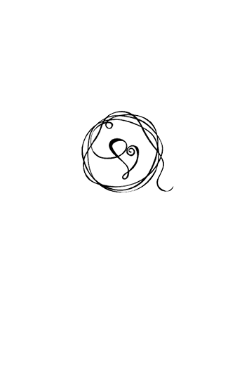
ÇOK AMA AZ
Gündelik hayatta pek çok şey arasında bir seçim yapmamız gerekiyor. Seçim yapabilmenin özgürlük ve özerkliğimizin bir göstergesi olduğunu düşünüyoruz. Seçimin açık ve güçlü bir araçsal değeri var: İnsanların ihtiyaç duydukları ve istedikleri şeyleri elde etmelerine imkân veriyor.
Seçme özgürlüğü, aynı zamanda ifade edici bir değere de sahip. Yani seçimlerimiz, dünyaya kim olduğumuzu ve nelere değer verdiğimizi göstermenin bir aracı. Yaptığımız her seçim, özerkliğimizin ve kendi kendimizi belirleme duygumuzun bir ifadesi.
Kendimizi iyi hissetmenin yollarından birisi de, çevremiz üzerinde denetim sahibi olduğumuzu düşünmek. Bu düşünce, çaresizlik duygusundan kurtulmamızı sağlar. O halde, sadece seçim yapma imkânımızın olmadığı durumlar için çaresizlik söz konusudur. Ancak seçim yapabilmekledir ki, hayatın gidişatına etkin olarak katılmış oluruz.
Mutluluk, bir süredir psikoloji biliminin ilgisini çeken bir kavram. Yapılan araştırmalar, kişi başına düşen milli gelirin yoksulluk sınırından orta halli yaşama düzeyine yükselmesiyle birlikte, zenginliğin mutluluk üzerindeki etkisinin azaldığını gösteriyor. Dolayısıyla örneğin Japonya Polonya’dan on kat daha zengin olmasına rağmen, Polonya’da da en az Japonya’daki kadar mutlu insan bulunmakta. Bu durumu, aynı ulusun zaman içindeki zenginleşmesini dikkate aldığımızda da görüyoruz: Amerika’da zenginlik 40 yıl içinde 5 kat daha artmış olmasına rağmen bunun insanların mutluluğu üzerinde anlamlı bir etkisi görülmüyor.
Mutluluğu sağlayan en önemli etken, yakın sosyal ilişkiler. Öznel iyilik hissini, diğer insanlara duyduğumuz bağlılıktan devşiriyoruz. Mutlu olmakla toplumsal bağlılık, bağlanabilme, dostluk kurabilme arasında bir ilişki var. ‘Kalpten kalbe bir yol var’ ve işte o yol, insanları mutlu ediyor.
Para değilse, mutluluğu sağlayan şey ne? Mutluluğu sağlayan en önemli etken, yakın sosyal ilişkiler. Öznel iyilik hissini, diğer insanlara duyduğumuz bağlılıktan devşiriyoruz. Mutlu olmakla toplumsal bağlılık, bağlanabilme, dostluk kurabilme arasında bir ilişki var. ‘Kalpten kalbe bir yol var’ ve işte o yol, insanları mutlu ediyor.
Son yıllarda yapılan bazı sosyal psikoloji çalışmalarında, maddi refahtaki artışın öznel iyilik hissini beraberinde getirmediği vurgulanıyor. Hatta tam tersine, günümüzde mutluluk ve esenlikte kayda değer bir azalmanın yaşandığı iddia ediliyor. Yaşantımıza dair pek çok seçim ile karşı karşıyayız; bu hepimiz için aşırı bir yük. Ayrıca hazır bir kimliği benimsemek yerine, modern dünyada artık kendimize yeni bir kimlik yaratmak veya keşfetmek durumundayız.
Günümüzde artan refah ve özgürlüğe karşın, bir bedel olarak, sosyal ilişkilerimizin niceliğinde ve niteliğinde azalma yaşıyoruz. Daha çok kazanıp daha çok harcıyor, fakat diğer insanlarla daha az zaman geçiriyoruz. Gittikçe yalnızlaşıyoruz. Yakın ilişkilerin oluşması zaman ve emek ister. Oysa zaman, mutlak biçimde sınırlı bir kaynaktır. Teknoloji zaman kazandıran icatlar yapadursun, zamanla ilgili sınırlılıklarımız giderek artıyor. Modern uygarlık, ‘eşyadan yana zengin, zamandan yana yoksul’ bireyler üretiyor.
Hayatın her alanında gittikçe daha çok seçim fırsatına sahip olmak, aslında fark ettiğimizden daha çok kaygı yaratıyor. Seçmek zorunda kalmak bazen iradeleri felç ediyor. Bolluk, seçmeye harcanan mesaiyle yakın insan ilişkilerinden çalıyor. Böylece özgürlüğün köleliğine yakalanmış oluyoruz.
Anlamlı sosyal ilişkiler kurmak ve sürdürmek, arzu etmesek bile, bu ilişkiler tarafından sınırlanmayı kabullenmemizi gerektirir. İnsanlara bağlandığımızda seçeneklerimiz sınırlanır. Canımız her istediğinde çekip gidemeyiz, hesap vermemiz gereken bir merci ve sorumluluk hissettiğimiz insanlar vardır.
Ekonomik pazarda kişiler tatmin olmadıklarında, terk etmeyi, bırakıp gitmeyi tercih ederler: Eğer bir lokantanın hizmetinden memnun kalmazsak bir daha ortaya gitmeyiz ve sorun biter. Günümüzde ‘kullan-at’ kültürü insan ilişkilerine de sirayet etmiş olmakla birlikte, sevdiklerimizi, dostlarımızı sorun çıktığında öyle bir lokantayı terk eder gibi kolaylıkla bırakıp gidemeyiz; tam tersine sıkıntılarımızı dillendirmek, sorunları çözmek için çabalamak gerekir. Çabalarımız sonuçsuz kalsa da, denemeye devam ederiz. Terk etme ve bırakıp gitme, en son başvurulacak çözümlerdir.
Hayatın her alanında gittikçe daha çok seçim fırsatına sahip olmak, aslında fark ettiğimizden daha çok kaygı yaratıyor. Seçmek zorunda kalmak bazen iradeleri felç ediyor. Bolluk, seçmeye harcanan mesaiyle yakın insan ilişkilerinden çalıyor. Böylece özgürlüğün köleliğine yakalanmış oluyoruz. Aralarında seçim yapabileceğimiz o kadar çok şey var ki, insan olmaya ayırdığımız zaman azalıyor. Seçme şansı çok, ama mutluluk az.
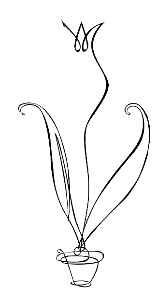
SARI LALELER
Bilge romancı Soljenitsin, “ele geçirerek değil, ele geçirmeyi reddederek” insanlığa ulaşabileceğimizi söylüyordu. Hep daha fazlasına ulaşmak için çabalamak yerine, sahip olma yarışından çekilerek, paylaşarak, vererek.
Türkçe Geo dergisi ikinci sayısında, ‘vazgeçmeyi bilenler’ başlığıyla bir dosya yayınlamıştı. Daha önce başka bir kitapta ilgi çekici öyküsünü okuduğum dolar milyoneri Zell Kravinsky, buradaki söyleşisinde, “Evsizler varken kimsenin iki eve sahip olmasına gerek yok” diyordu. “İnsanları sevmek genellikle ailede başlar derler. Ama bence genellikle ailede de bitiyor.” İnsanların yalnızca kendilerini, ailelerini ve yakın çevrelerini düşündüğü bir dünyada, varlığının önemli bir kısmını yoksullara ve tıbbi araştırmalara hibe eden kahramanımız, bununla yetinmemiş, bir de böbreklerinden birisini herkesin şaşkın bakışları altında siyahî bir hastaya bağışlamıştı. Kravinsky, “İnsan iyi bir şey yapmak istediğinde bunu hemen yapmalı, çünkü bencillik duygusu hemen geri gelebilir” diyordu.
Bu ölçüde bir fedakârlık, pek çoğumuzu huzursuz eder, zira içimizde bir suçluluk duygusu uyandırır. Dünyayı cehenneme çeviren küresel tamahkârlığa rağmen, kâinat karşılıklı mücadele kadar karşılıklı yardımlaşmaya da tanıklık eder. Birimizin mutluluğunun hepimizin mutluluğuna bağlı olduğu yolundaki ahlaki duygu ile insan oluruz. Hopi Kızılderililerinde çocuklara en yüce değerin ‘iyi bir Hopi yüreği’ne sahip olmak olduğu öğretilirmiş. Bu etos insanlara güvenmeyi ve saygı duymayı, herkesin hak ve iyiliğini gözetmeyi emreder. Tıpkı bizim geleneksel kültürümüzde olduğu gibi, iç huzurun vermekte, paylaşmakta, dünyanın ‘mahrem macera’sında yoldaşlık etmekte bulunduğunu öngörür.
Bilge romancı Soljenitsin, “ele geçirerek değil, ele geçirmeyi reddederek” insanlığa ulaşabileceğimizi söylüyordu. Hep daha fazlasına ulaşmak için çabalamak yerine, sahip olma yarışından çekilerek, paylaşarak, vererek.
Modern dünyada dikkate almamız gereken seçenekler artmıştır ve reddettiğimiz seçenekler, tüm albenileriyle bize uzaktan göz kırpmaya devam etmektedir. Aklımız onlarda kaldığı için, seçtiğimiz şeyden sağladığımız doyum azalmaktadır. Seçmediğimiz alternatifleri ve onların muhtemel getirilerini zihnimizden atamadığımız için, seçtiğimiz şeyin bize yaşatacağı doyum yerine, seçmediklerimizin özlemiyle hayal kırıklığı hissederiz.
Pek çok seçeneğe sahip olmanın bizi tedirgin etmesinin bir nedeni de, tercihlerimizin artık tamamıyla bizim sorumluluğumuzda olmasıdır. Başarılar da başarısızlıklar da artık imkânlarla değil bizim seçimlerimizle, kararlarımızla ilişkilidir; dolayısıyla muhtemel başarısızlıkların tek sorumlusu kendimiz oluruz. Başarısızlıklarımız için öne süreceğimiz bahaneler yoktur.
Verdiğimiz kararların bizi hayal kırıklığına uğratmasının bir diğer nedeni ise, adaptasyon dediğimiz süreçtir. Şeylere alışırız ve onların hep elimizin altında olacağını varsayarız. Haz duyduğumuz şeylere alışırız, böylelikle onlar birer haz kaynağı olmaktan çıkar. Adaptasyon yüzünden olumlu deneyimlerden aldığımız haz sürekli değildir, daha da kötüsü insanlar sıklıkla bu gerçeğin, yani önünde sonunda adaptasyon sürecinin işleyeceğini ummazlar. Hazzın ve zevkin zamanla azaldığını görmek, beklemediğimiz ve hoşnut olmadığımız bir sürpriz olarak karşımıza çıkar.
Modern dünyada dikkate almamız gereken seçenekler artmıştır ve reddettiğimiz seçenekler, tüm albenileriyle bize uzaktan göz kırpmaya devam etmektedir. Seçmediğimiz alternatifleri ve onların muhtemel getirilerini zihnimizden atamadığımız için, seçtiğimiz şeyin bize yaşatacağı doyum yerine, seçmediklerimizin özlemiyle hayal kırıklığı hissederiz.
Modern hayatta deneyimlerimizden aldığımız tatminin azalmasının nedenlerinden biri de, kendi yaşantılarımızı kıyaslayacağımız şeylerin bolluğudur. Ve seçeneklerdeki çokluk bu tatminsizliğe katkıda bulunmaktadır. Maddi ve sosyal şartlarımız geliştikçe kendimizi kıyasladığımız standartlar yükselir. Haz duygusunun referans noktası arttıkça, beklenti ve hayallerimizin çıtası yukarı çıkar. Seçeneklerin artması, kaçınılmaz biçimde beklentilerin de artmasına neden olur.
Modern dünyada istenmeyen, hayal kırıklığı yaratan her seçim, hatta umulduğu kadar haz vermeyen her olumlu yaşantı bile, kişinin kendi kendisini suçlamasına yol açmaktadır. Kişi, tercih etmediği imkânlar ve kaçırdığı fırsatlar yüzünden pişmanlık duymakta, refah ve bolluğun ortasında mutsuz ve tatminsiz kalmaktadır. Modern dünyada klinik depresyonun bu kadar yaygınlaşmasının önemli nedenlerinden birisi de budur.
Günlerdir Mazhar Babanın ‘Sarı Laleler’ adlı şarkısını dinliyorum, bu yazıyı da olağandışı güzellikteki bu şarkıyı döne döne dinleyerek yazdım. Hayatı sadeleştirmek gerekiyor, basit yaşayan insanlar, kanaat edebilenler, ele geçirmeyi reddedenler, kendilerini sınırlandırabilenler bir adım önde yürüyor. Onlar, nadide sarı laleler gibi, ışıltılarıyla dünyayı güzelleştiriyor.
Modern dünyada istenmeyen, hayal kırıklığı yaratan her seçim, hatta umulduğu kadar haz vermeyen her olumlu yaşantı bile, kişinin kendi kendisini suçlamasına yol açmaktadır. Kişi, tercih etmediği imkânlar ve kaçırdığı fırsatlar yüzünden pişmanlık duymakta, refah ve bolluğun ortasında mutsuz ve tatminsiz kalmaktadır.
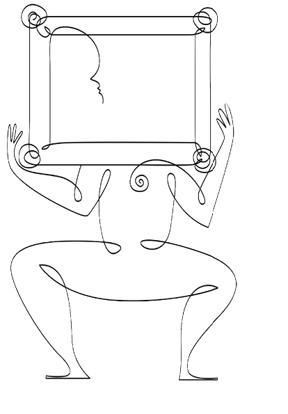
OLAĞAN ŞÜPHELİLER
Aldous Huxley Cesur Yeni Dünya’da bir gelecek resmi çiziyordu. Huzursuz ve duygusuz bir kaçış kültürünün, soma adlı küçük sükûnet haplarıyla sağlandığı bir dünya, geleceğin dünyası. Lise bir öğrencisiydim bu kitabı okuduğumda, o sıralar Eskişehir gazetesinin kültür sanat sayfalarında yazıyorduk. Bir arkadaşımla birlikte, 1984 ve Cesur Yeni Dünya’yı ele alıp çocuk aklımızla bu ters ütopyaları tartıştığımız bir yazı yayınladığımızı hatırlıyorum. Bugün bu kitabı hatırlamama neden olan şey, günümüzün dünyasında giderek yaygınlaşan ‘sükûnet hapı’ kullanımı. Şehir efsanesi midir bilmem, ama New York’un atık sularında Prozac’ın saptanabilir oranlara ulaştığı söyleniyor.
Kişinin bir ilaçla değişebileceği düşüncesi Amerikan psikiyatrisinin pek sevdiği bir düşünce. Bir dönemin mucize ilaçları Ritalin ve Valium’du; şimdinin mucize ilaçları ise Prozac’ın şahsında temsil edilen serotonin hapları. Valium rahatlatıcı bir ilaçtı, ABD’de bir ara çok yaygın olarak kullanılmasının, halkı Vietnam işgalinin yarattığı suçluluk duygusundan uzaklaştırmaya hizmet ettiği söyleniyordu. Bugünkü serotonin ilaçlarının da parlak, girişken ve enerjik kişilikler yaratarak, günümüz Amerikan iş hayatına uygun tipler biçtiği dile getirilir. Eğer endişeli ve yalnızsanız ve bir ilaç da bunu onarabiliyorsa, neden denemeyesiniz değil mi? Benlikler kendilerini gerçekleştirme, kendilerini ortaya dökme, cilalanma telaşında. Anlam odağı bireysel psikolojiye kayıyor: İnsan hayatının başarısı, psikolojik iyilik hissinde aranıyor.
Mutluluğun bir hapla başarılabileceği düşüncesi, insandaki mücadele ve mukavemet azmini törpülüyor. Böylece bir hapla dönüşsek ve mutlu olsak bile, geride anlatabileceğimiz bir öykü kalmıyor. “Bunu ben kendi gayretimle yendim” diyebileceğimiz bir anlatı oluşmuyor.
Serotonin üzerinden etki eden antidepresanlar, klinik depresyonda gayet etkili ilaçlar ve kullanılmaları yararlı. Ancak bu ilaçlar bazen sıradan hüzün ve keder durumlarında da kullanılıyor ve kimi insanlara, “Asıl benliğimi buldum, işte asıl ben buyum!” dedirtiyor. Böylece iç kimlik dönüşüme uğruyor: Mahcup kişi dışadönük, katı kişi esnek oluyor. Hastalıktan sağlığa değil, normal bir durumdan diğerine dönüşüm gerçekleşiyor. Mutluluğun bir hapla başarılabileceği düşüncesi, insandaki mücadele ve mukavemet azmini törpülüyor. Böylece bir hapla dönüşsek ve mutlu olsak bile, geride anlatabileceğimiz bir öykü kalmıyor. “Bunu ben kendi gayretimle yendim” diyebileceğimiz bir anlatı oluşmuyor.
Günümüzde ergenlik döneminden itibaren, hayatımızı nasıl kazanacağımız, nerede yaşayacağımız, kiminle evleneceğimiz, çocuk sahibi olup olmayacağımız gibi konularda önemli kararlar almamız gerekiyor. Hayat planlı bir proje olarak yaşanıyor. Hayatın bir proje olarak düşünülmesi, hem bireysel sorumluluk hem de ahlaki bir belirsizlik anlamına geliyor. Eğer hayatımın planlayıcısı ben isem, başarı ve kusurlarımdan da ben sorumluyum demektir. Hayatlarımızın gayesi konusunda bir kafa karışıklığı yaşıyoruz, her bireyden kendi bireysel gayesini keşfetmesi ve onu gerçekleştirmesi bekleniyor. O halde iyi bir hayatı belirleyen şey nedir? Bir hayatı yaşanmaya değer kılan, onu ‘doğru’ kılan nedir? Hayatın anlam sağlayıcıları olarak geleneksel değerler çözündükçe, buna her bireyin kendi dağarından bir cevap üretmesi gerekiyor. Günümüzün ‘küresel mutluluk kültürü’ bize, “Ruhundaki iyilik hissine bir bak!” diyor, “eğer keyfin yerindeyse, doğru bir ömür sürüyorsun demektir.” Kendini iyi hissediyorsan, tamamdır! Okey yani.
Bir hayatın başarı veya başarısızlığı kişinin kendini yeterince ortaya koyup koyamadığı ile tartılıyor. Evlilikler çok çabuk yıkılıyor, çocuklar pek çabuk yuvalara bırakılıyor. “Eğer kendini ortaya koyamıyorsan hayatın sana sunduğu fırsatları kaçırıyorsun dostum!” diyor bize bu anlayış, “acele et.” Oysa treni kaçırmış olduğumuzu bize kesinkes gösterecek hiçbir kesin bilgi yok. Elbette buradan ‘hayat koçluğu’ gibi garip fırsatçılıklar türüyor, hayatı ancak bir kullanma kılavuzu ile yaşayabileceğini zanneden insanlar sayesinde, bu uğraşı bir işkoluna dönüşebiliyor. Doğunun kadim bilgeliğini iğdiş edip yalapşap reçetelere dönüştüren yüzeysel kitaplar, hayatı anlamakta bize kılavuzluk etmeye kalkıyor. Mutlu olmak artık bir yükümlülük. Mutsuzları, dertlileri ‘olağan şüpheliler’ arasına yazan bir uçarılık karşısındayız.
Hayatın anlam sağlayıcıları olarak geleneksel değerler çözündükçe, buna her bireyin kendi dağarından bir cevap üretmesi gerekiyor. Günümüzün ‘küresel mutluluk kültürü’ bize, “Ruhundaki iyilik hissine bir bak!” diyor, “eğer keyfin yerindeyse, doğru bir ömür sürüyorsun demektir.” Kendini iyi hissediyorsan, tamamdır! Okey yani.
“Hayatımda neşe duyacak hiçbir şey yokken” diyordu karşımdaki genç kadın, “bir ilaçla aptal bir neşe içerisine girmiş durumdayım ve bundan hiç hoşlanmıyorum.” Hanımefendi, olağan şüpheliler arasına hoş geldiniz.
PARA SAADET GETİRİYOR MU?
Yirmili yaşlarının başındaki genç adam, “Bana paranın önemsiz olduğunu hiç kimse söylemesin” diye mırıldandı, neden sonra duruşuna mağrur bir eda vererek cümlesini tamamladı: “Ben materyalistim arkadaş!” Hayatımda ilk defa, birisinin hiç utanıp sıkılmadan kendisini böyle tanımladığını duyuyordum. Hani paraya önem veren çok insan görmüş ve dinlemiştim ama paraya verdiği önemi militan materyalistliği ile telif edene ilk defa rastlıyordum. Aslında bu delikanlı bir kuşağın şarkısını terennüm eder gibiydi. Uğruna yaşanacak ve ölünecek değerleri olmayan, hayatı kendi benliği ekseninde anlayan ve tanımlayan maddeci bir kuşak, anne babalarından farklı olarak, bu tutumlarını cümle âleme ilan etmekte beis görmüyorlardı.
İnsan güvenlik arayan bir varlık. Sahici ilişkiler kuramayan, hayatlarında dostluğun kol kanat geren varlığını hissedemeyen insanlar güvenlik ihtiyaçlarını daha çok maddi kazanımla gidermeye yönelirler. İnsanda pek çok şey güvensizlik yaratabilir: Yeterince takdirkâr olmayan, çocuğunu duygusal açıdan yeterince besleyememiş bir anne baba, yoksulluk ve ölüm endişesi bu nedenler arasında sayılabilir. Güvensizlik duygusu mutsuzluk ve tatminsizliğe yol açar ve bunları gidermek için de kişi maddi nesnelere yönelir. Maddi kazanımlar ilk elde bu güvensizlik duygusunu giderir gibi görünse de, sonunda onu daha fazla derinleştirebilir de. Daha çok maddiyat insanların hayatına daha fazla mutluluk olarak geri dönmez.
Bazı araştırma sonuçlarına göre zenginliği, malı mülkü, statüyü ve imgeyi baştacı eden insanlar kişilerarası ilişkilere ve ait oldukları topluma katkıda bulunmaya daha az önem veriyorlar. Hırslı, tamahkâr, başarılı olma arzusuyla yanıp tutuşan kişiler şefkat ve diğerkâmlık konusunda çoğu zaman sınıfta kalabiliyor. Yeryüzünün farklı kültürlerinden insanları da içine alan bir çalışmada, materyalizm ile güçlü ilişkiler (sadakat, yardımseverlik, sevgi) ve topluma ilgi (adalet, barış, eşitlik) arasında ters bir ilişki olduğu, birinde artışın diğerinde azalmaya yol açtığı gösterilmiş. İnsanlar tüketim ve alışverişe, kazanma ve harcamaya çok önem verir ve vakitlerinin çoğunu eşyayı ve onun parasal değerini düşünmeye ayırırlarsa bir süre sonra kişilere de nesne gibi davranmaya başlarlar.
Martin Buber bu ilişki biçimine ‘ben-şey ilişkisi’ diyor: Karşı tarafın nitelikleri, öznel yaşantısı, duygu ve arzuları ihmal edilir, önemsiz addedilir veya sadece işe yarayacaksa kâle alınır. Böylesi ilişkilerde kanlı canlı insanlar nesne derekesine düşürülür; alınıp satılacak, kullanılıp atılacak nesneler haline getirilir. Buber, ‘ben-şey ilişkisi’yle; diğer insanların öznel duygular taşıyan varlıklar olarak görüldüğü ve bakış açıları farklı olsa bile önemli sayıldığı ‘ben-sen ilişkisi’ arasındaki zıtlığa değinir.
Güvensizlik duygusu mutsuzluk ve tatminsizliğe yol açar ve bunları gidermek için de kişi maddi nesnelere yönelir. Maddi kazanımlar ilk elde bu güvensizlik duygusunu giderir gibi görünse de, sonunda onu daha fazla derinleştirebilir de. Daha çok maddiyat insanların hayatına daha fazla mutluluk olarak geri dönmez.
Kapitalist tüketim toplumlarında dostluk da belirli amaçlara hizmet eden bir tüketim metaı haline gelir. Dostlar bize yararlı bir şeyler sağlayabildikleri sürece dost olarak kalır ve ilgiyi hak ederler. Bu karşılıklı bağımlılığa dayalı, pazarvari kontrat ilişkileri marifetiyle ‘dost’ karşılıklı olarak menfaatlerimizi karşıladığımız bir nesneye dönüşür. Birbiriyle halleşmek isteyen iki insanın yerini belirli etkinlik ve arzular için birbirini kullanan iki insan alır. Empati ve cömertlik kayıplara karışır, yabancılaşma hızlanır. Maddeci değerlerin hükümferma olduğu bir toplumda çiftleri, arkadaşları, aileleri ve toplumları birbirine bağlayan bağlar zayıflar ve mahremiyet, insanın insana duyduğu yakınlık buharlaşıp kaybolur.
Maddeci değerlerin hükümferma olduğu bir toplumda çiftleri, arkadaşları, aileleri ve toplumları birbirine bağlayan bağlar zayıflar ve mahremiyet, insanın insana duyduğu yakınlık buharlaşıp kaybolur.
Bizim delikanlıya gelirsek, materyalist dostumuz iki hafta sonra uğradığında ‘ferrarisini satmış’, kadim öğretilerde huzur arıyordu.

“MUTLULUĞUN FORMÜLÜ ÇOK AÇIK!”
İçinde yaşadığımız çağ, insanın tamahkârlığını kamçılıyor. Üstelik ‘sosyal Darwinizm’in artık ruhlara işlemiş ilkeleri gereğince, kişi ancak başkalarından güçlü olmak suretiyle ayakta kalabileceğine inanıyor. Böylece insan, kendi durumunun iyiliğine, başkalarını göz ucuyla süzdükten sonra kanaat ediyor. Varsayalım ki, iki hayalî dünyadan birisi arasında bir seçim yapmanız isteniyor: İlkinde yılda 50 bin dolar kazanıyorsunuz oysa diğer insanlar 25 bin dolar kazanıyor. İkincisinde yılda 100 bin dolar kazanıyorsunuz, oysa diğer insanlar yılda 250 bin dolar kazanıyor. Hangisini seçerdiniz? Bu soru, bir grup Harvard öğrencisine sorulmuş ve ezici çoğunluk ilk seçeneği işaretlemiş. Kendi durumları diğer insanlara göre daha iyi olduğu sürece, daha az kazanmaya razı olmuşlar. Başka bazı çalışmalar da aynı sonuca ulaşmış. İnsanlar, başkalarına göre kendilerini daha üstün konumda hissettikleri sürece, gelirlerindeki düşmeyi çok önemsemiyorlar. İnsanın gelirinden memnun olup olmaması, belirli bir normla yaptığı mukayeseyle ilgili. Bu norm da iki şeye bağlı; ‘diğer insanlar ne kadar kazanıyor’ ve ‘ben ne kadar kazanmaya alışkınım’. İlki sosyal mukayeseyle ilgili, ikincisi de süregiden duruma alışmayla.
İnsanların ufak arabalar sürdüğü bir mahallede arabanızdan rahatsızlık duymazsınız. Mütevazı bir arabanız varsa, diğer insanların gösterişli arabalara binmelerinden rahatsızlık hissedersiniz. Herkes gösterişli arabalara bindiğinde, bu durumun sağladığı haz, ufak arabalara binmekle eşitlenir. Ekonomik büyümeyle birlikte mutluluğun artmamasının en önemli sebebi budur. Gereksiz karşılaştırmalar, gerçekliği bozarak algılamamıza yol açar. Mutluluğun sırlarından birisi, şeylerden olduğu gibi hoşlanmak ve onları daha iyisi ile karşılaştırmamaktır. O halde sizden daha ‘varlıklı’, daha ‘başarılı’ insanlarla kendinizi mukayese etmeyi bırakın, siz sadece kendi kendinize neyi yapabildiğinize bakın.
İçinde yaşadığımız çağ, insanın tamahkârlığını kamçılıyor. Kişi ancak başkalarından güçlü olmak suretiyle ayakta kalabileceğine inanıyor. Böylece insan, kendi durumunun iyiliğine, başkalarını göz ucuyla süzdükten sonra kanaat ediyor.
Mutluluğu sürdürmek için elinizde olanı tutmak ve onun üzerine bir şeyler eklemek istersiniz. İnsan maddi şeylere çabuk alışır ve onların verdiği tatminle çabuk doyar. Reklamcılar da zaten buradan ekmek yer. Bu iptilayı yeni harcamalarla beslememizi isterler. İhtiyacımız olmadığı halde yeni cep telefonları, yeni giysiler, yeni arabalar alırız. O halde gerçekten ihtiyaç duymadığımız şeyleri satın almamamız ve zamanımızı dostluk, anne babalık, dayanışma gibi solmayan, kaybolmayan, alışıp bıkmayacağımız değerlere ayırmamız gerekir.
Mutluluk kendimize hedefler tayin edebilmemizle ilgilidir. Kolay ulaşılır hedefler bizi çabuk sıkar. Zor hedefler, hayal kırıklığı yaratabilir. İnsanın hedeflerini yaşadığı gerçeklerden hareket ederek tayin etmesi gerekir. Ulaşılması güç hedefler koyarak bu uğurda fazla yorulmak, bilinen depresyon nedenlerinden birisidir. İç sıkıntısı, bugün Batı toplumlarını içten içe kemiren bir illet. İnsanlar yeni şeyler peşinde koşmak yerine konforu seçiyor, iş dışında aktif olarak ilgilenecekleri uğraşlar bulmakta zorlanıyor. Bizim toplumuzdaki ezici çoğunluk gibi, hayatta kalmak için canlarını dişlerine takıp çaba harcamaları gerekmiyor. Bu da onları amaçsız, tüketim kölesi, televizyon bağımlısı, sıkıntılı insanlar haline getiriyor. Hepimizin, bizi zaman duygusundan kurtaran, adeta zamanın dışına çıkaran, yaptığımız işe gömüldüğümüz, ‘akış’ anlarına ihtiyacımız var. O halde işin dışında da, uğruna uçurtmalar uçurduğunuz ideal, uğraşı ve hedefleriniz olsun.
Gereksiz karşılaştırmalar, gerçekliği bozarak algılamamıza yol açar. Mutluluğun sırlarından birisi, şeylerden olduğu gibi hoşlanmak ve onları daha iyisi ile karşılaştırmamaktır.
İnsan sosyal bir varlıktır, dostluk ve ilişki arar. İlişki ve dostluklar, bize kişisel bir kimlik duygusu kazandırır. Sosyal varlıklar olarak birbirimize güvenmek isteriz. Batı toplumlarında daha fazla olmak üzere, genel olarak dünyada, güvenin azaldığı görülüyor. İşten çıkarmalar artıyor, evlilikler sıklıkla boşanmayla sonuçlanıyor, terör her yerde patlak veriyor. O halde güven yeniden inşa edilmeli, okullarda ve evlerde sağlam bir ahlak eğitimi sağlanmalı. Çocukların ve gençlerin sırtlarını dayayabilecekleri daha istikrarlı aile ve toplum yapıları inşa edilmeli. Yalan söyleyen, dünyayı kan gölüne çeviren siyasi liderler, sandıklarda mağlup edilmeli.
Mutluluk dış şartlar kadar içinizde neler yaşadığınızla da ilgilidir. Yani mutluluğun formülü çok açık: Bir sen, bir ben, bir de bebek! Yani sosyal bağ, insan ilişkisi. Kendimi onda seyredeceğim bir yüz. Bana dünya maceramı özetleyecek bir harita. Az daha unutuyordum, dahası da var: Bir kalp, bir ruh, bir de akıl!
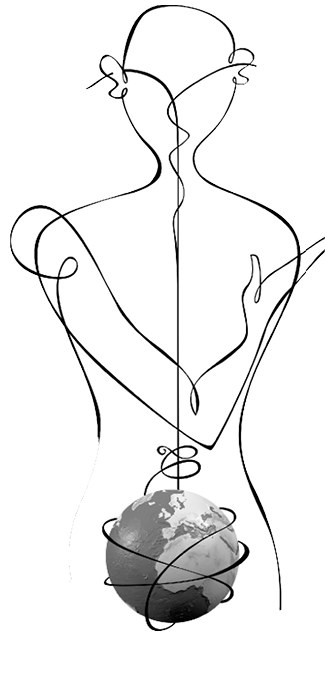
İKİ SES
Sohbet, kendi hikâyemi başkasına ve başkasıyla anlatmam demektir. Ancak beni işitecek bir insanın varlığıyla sohbet mümkün olur. Sohbet yoluyla iç dünyalarımızı birbirimize açarız. Anlatmak ve dinlemek yoluyla canlı olmanın, insan olmanın nasıl bir şey olduğunu kavrarız. İnsan, ötekinin yüzünü arayan bir varlık.
Bir başkasında yankılanmak isteyen, içinin ışıklarını bir başkasının içine düşürmek isteyen bir varlık. Sohbetimizin şekli ve enerjisi, onun içinde taşıdığı kuvvet, hikâyemi kiminle paylaştığıma ve içinde bulunduğum zamana göre değişir. Samimi insanların konuşması, planlanmış olmaması ve ucunun nereye varacağının bilinmemesiyle, üretken bir süreçtir. Yunus’un “Her dem yeniden doğarız/ Bizden kim usanası” dediği gibi, sohbet her dem tazelenir, her dem yeni yollar, yeni bakma ve duyma biçimleri üretir. Gerçek bir konuşma için yüz yüze bakmak, bedenlerin yakınlığı gerekir. Sözler ancak yüz ve beden ifadeleriyle gerçek anlamına kavuşur. Bedensel temas yakınlığın temelidir, ancak konuşma bu yakınlığın ötesine taşar. Sohbet, konuşmadan farklıdır. O dünyayı yeni bir biçimde görmemizi sağlar.
Gerçek bir sohbet; ırk, sınıf, cinsiyet, kültür veya dinden bağımsız olarak herkese eşit davranılan evrensel adalet anlayışından ve bir saygı etiğinden yola çıkar. Herkesin sözünün önemli sayıldığı, söz söyleme kudretinin kimseden esirgenmediği, herkesin gönlündekini dillendirebildiği bir ortam, sohbeti mümkün kılar. Yeni tanışmalar ve yeni bakma biçimleri, geçmiş yargıları silkeleyerek bize daha olgunlaşmış bir dünyanın kapılarını aralar. Sohbet arkadaşlarımız sıkıcı rutinlerden, bildik düşünce kalıplarından, basmakalıp yargılardan kaçmak için bize cesaret ve ilham veren kişiler olduğunda, dünya bir gül bahçesi olur.
Samimi insanların konuşması, planlanmış olmaması ve ucunun nereye varacağının bilinmemesiyle, üretken bir süreçtir. Yunus’un “Her dem yeniden doğarız/ Bizden kim usanası” dediği gibi, sohbet her dem tazelenir, her dem yeni yollar, yeni bakma ve duyma biçimleri üretir.
Evini yabancı olduğu kişiye açabilen, sofrasına insan buyur edebilenler konuksever kimselerdir. İnsanlar tuhaf görüşlere, daha önce hiç duymadıkları kanaatlere, onlara tamamen yabancı görünen geleneklere de konukseverlik gösterebilir. Bu şekilde, bilinmeyenle etkileşim, kendi hakkımızdaki görüşümüzü de bir ölçüde değiştirir. Hep söylendiği gibi, kişi bilmediğinin düşmanıdır ve bilmek, bize dostluğun cennet kokusunu vaat eder.
Şefkatli anne babalar, çocuklukta ve gençlikte edinilen dostlar, yetişkinlik çağında kurulan yakın ilişkiler, hep bize zorluklara katlanmak için omuz verir. Eğer çocukluğumuzda yoğun bir ana baba sevgisini yaşayacak kadar şanslı olamadıysak, bu erken kayıpları daha sonra telafi edebiliriz. İnsanın bir başkasında kendisini yankılama, bir başkası tarafından sevilip onaylanma ihtiyacı ömür boyu sürer. Olumsuz çocukluk yaşantıları, ergen ve erişkin hayatındaki besleyici ilişkilerle giderilebilir. Bir çalışma, ahbaplık etme tarzında aktif sosyal desteğin, kronik depresyon yaşayan kadınların iyileşmesinde ilaçlar kadar etkili olduğunu gösteriyor.
Benliklerimiz sohbet olmaksızın bitmemiş ve tamamlanmamıştır. Sohbet ederek sadece karşımızdakini değil kendimizi de anlarız. Sohbet bize kendimiz olma imkânı verir. “Tek bir ses hiçbir şeyi çözmez, hiçbir sonuca ulaşmaz”, “hayat ve varlık için asgari olan, iki sestir.”
Coşku, ilgi, sevgi, rıza gibi olumlu duygular duygusal mukavemeti arttırıyor. Olumlu duygular hem kişileri zorluklara karşı kalkan olarak koruyor, hem de zorluklarla başa çıkmayı kolaylaştırıyor. Olumlu duygular yaşayan insanların zihinleri daha işlek oluyor ve sorun çözme yetenekleri artıyor. Geniş ve kuvvetli sosyal destek ağına sahip insanların beden ve ruh sağlıklarının daha iyi olduğunu, bu kişilerde daha az depresyon görüldüğünü biliyoruz. Sosyal desteği yüksek insanlar, daha etkili stratejiler geliştiriyorlar. Bu kişiler, çevreden daha çok sosyal destek almaya hazır ve olayları denetim altına alma yolunda daha gayretliler. Yani sohbet, dostluk ve yârenlik insanı daha mukavim, daha dirençli, kötülükleri alt etme konusunda daha iyimser kılıyor.
Sohbet bize bir anlam atmosferi sunar. Orada soluk alıp veririz. Sohbeti diri tutan paylaşılan anlamdır. Sohbet bir başkasının yüzünde kendi maceramı okuyabilmemdir ve bana bu dünyada yalnız olmadığımı öğretir. Benliklerimiz sohbet olmaksızın bitmemiş ve tamamlanmamıştır. Sohbet ederek sadece karşımızdakini değil kendimizi de anlarız. Sohbet bize kendimiz olma imkânı verir. Uzun yıllar evvel Bakhtin diye bir adam, “Tek bir ses hiçbir şeyi çözmez, hiçbir sonuca ulaşmaz” demişti, “hayat ve varlık için asgari olan, iki sestir.”
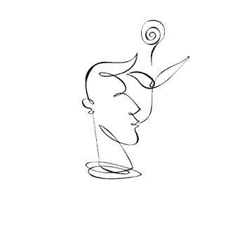
SAYGI
“Saygı yokluğu, açıkça yapılan bir hakarete nazaran daha az saldırgan olsa da, aynı derecede yaralayıcı bir hal alabilir. Örneğin, karşıdaki insana hakaret edilmiyordur ama onun bir insan olarak varlığı da tanınmıyordur: Bu kişi, varlığı önem arz eden tam bir insan olarak görülmüyordur.”
Kocalar karılarına bağırıyor, doktorlar sırada bekleşen hastalara bağırıyor, hastalar birbirinin sırasını almaya yelteniyor, imtiyazlı olduğunu düşünenler emniyet şeridini gasp ediyor, amir memuru paylıyor, gazeteci yalan haber yapıyor, belediye işleri eşe dosta veriliyor ve bir çocuk, Dilârâ, bir çukura düşerek hayatını yitiriyor. O, saygı kıtlığı çekilen bir ülkenin kurbanı. Çünkü biz saygıyı sadece belirli insanlara hasrediyoruz. Sadece bizden daha güçlü gördüğümüz kişi veya kurumlara saygı gösteriyoruz. Bizimle eşit statüde bulunmayan insanların ihtiyaçlarına saygı duymuyoruz. Çıkarları bizimle aynı olmayan, bizden farklı düşünen, bizden farklı giyinen, niye bizden farklı olduğunu anlayamadığımız insanlara saygı göstermiyoruz. Başkasında görüp de anlayamadığımız şeyi kabullenmekte zorluk çekiyoruz. Ve nihayet bu ülkenin mülksüzlerine, ‘görünmez’lerine saygı duymuyoruz. Onların hayatı bizi ilgilendirmiyor, çocuklarını bir çukurda veya bir dağda yitirdiklerinde hiç ses etmesinler, hiç haklarını aramasınlar istiyoruz.
Saygıyı sadece belirli insanlara hasrediyoruz. Sadece bizden daha güçlü gördüğümüz kişi veya kurumlara saygı gösteriyoruz. Bizimle eşit statüde bulunmayan insanların ihtiyaçlarına saygı duymuyoruz.
Bir ‘ihtimam ahlâkı’na ihtiyacımız var. Yaralamayan bir hayırseverliğe, acımaktan doğmayan bir adalete. Tahakküm etmeyen bir merhamete susamış durumdayız. Bunun için saygının günübirlik ilişkilerde canlandırılması, her yurttaşın saygıya layık olduğunu hissetmesi ve bu duyguyu içselleştirmesi gerekiyor. Yaşadığımız ülkede saygısızlık, en çok başkalarının varlığını tanımayarak kendini gösteriyor. İdeolojik kutuplaşmalar ve ihanet suçlamaları böylesi bir zeminde hayat buluyor. Ancak belirli imtiyazlara sahip olursanız saygı görebileceğiniz düşünülüyor. Sözgelimi milletvekilleri, temsil ettikleri nüfusa göre bazı ayrıcalıklara sahip durumdalar. Ülkenin diğer yurttaşları gibi hastanelerde sıra beklemiyor, özel anlaşmalarla diledikleri sağlık kurumundan yararlanabiliyorlar. Bu durumda da hastanelerde yaşanan sıkıntıları ilk elden tecrübe ederek öğrenmek gibi bir imkândan mahrum kalıyorlar. İşte ihtimam ahlâkı, başkasının önüne geçmeyi içimize sindiremediğimizde, onun hak ve özgürlükler konusunda bizden geride olduğunu düşünmediğimizde başlıyor. İnsana özen gösterdiğimizde. Ona hürmet ettiğimizde.
Modern toplumda eşitsizlik ciddi bir sıkıntı doğuruyor. Eşitsizliğin sınırları karşılıklı saygıyla aşılabilir. Ama evvelemirde karşımızdaki insanın varlığını kabullenmemiz gerekiyor. Onun bu dünyadaki varlığını önemli saydığımızı, onun hayatında anlayamadığımız şeyler olsa bile, bunu kabullenebildiğimizi söylememiz gerekiyor. Hayata ancak ‘yukarı doğru hareketlilik’ olduğu sürece bir değer biçen, maddi kazanımlar açısından yukarılara çıkmayanları kolayca kaybedenler hanesine yazan bir dünyada, insan ilişkileri kokuşmaya başlar. Sadece güçlü olanın hayatta kalmayı ve saygı görmeyi hak ettiğini düşündüğümüzde, dünya bir yangın yerine döner. Hayatın maddileşmesi, pek çok manevi değeri aşındırdığı gibi, saygının da altını oyar.
Bir ‘ihtimam ahlâkı’na ihtiyacımız var. Yaralamayan bir hayırseverliğe, acımaktan doğmayan bir adalete. Tahakküm etmeyen bir merhamete susamış durumdayız. Bunun için saygının günübirlik ilişkilerde canlandırılması, her yurttaşın saygıya layık olduğunu hissetmesi ve bu duyguyu içselleştirmesi gerekiyor.
Türkiye’nin dönüşmesi saygının insan ilişkilerinde yeniden hükümferma olmasıyla başarılabilir. Her birey saygıyı hak ettiğini, saygı görmenin doğal hakkı olduğunu, dolayısıyla diğerine de saygı göstermesi ve onun üzerine titremesi gerektiğini kabullendiğinde, saygı kıtlığını aşabiliriz. O zaman bu ülkenin iliklerine kadar sinen rüşvet ve yolsuzluk iklimi bir son bulabilir. Saygıyı içselleştirdiğimizde, ‘çıkarları bizimle aynı olmayan’ insanları ideolojik bezirgânlık yoluyla yıldırmayı düşünmeyiz. O zaman işler ehline verilir ve rögarlar açık unutulmaz. Saygısızlığın koca çukurları, körpecik hayatları yutmaz.
Bu yazıya Richard Sennett’in Saygı adlı kitabının epigrafından cümlelerle başladım. Daha güzel sözcüklerim olmadığı için, yine o epigrafın cümleleriyle bitiriyorum: “Çoğu açlıklar gibi, saygı kıtlığı da insan yapımıdır; yiyeceğin aksine saygının hiçbir maliyeti de yoktur. O zaman niçin saygı bu kadar kıt olsun ki?”
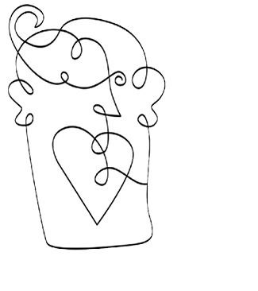
YAŞLANMAK BAŞLANMAKTIR
Batı dünyasında yaşlıların giderek yalnızlaştığını biliyoruz. Üretim çarkından çekilen ve tüketici olarak da yeterince dinamik bulunmayan yaşlılar, adeta toplumun kıyısına itiliyor. Yaşlanmanın getirdiği doğal bedensel zayıflık, yaşlı insanların utanmaları gereken bir durum olarak sunuluyor ve devreye anti-aging türü maskaralıklar sokuluyor. Anti-aging ideolojisi bize şunu söylüyor: “Genç olan daha iyidir. Beden genç, ince ve güzel görünmelidir ki insanlar onun üzerinden onu taşıyan kişiye değer versinler.” Modernite gençliği adeta kutsuyor, bütün hayatı gençliğin kendisini tekrar ettiği bir döngü olarak kurmak istiyor. Bu da, yaşamışlığın getireceği derinliği reddetmek anlamına geliyor.
Yaşlı insanın biriktirdikleri kıymetsiz gösteriliyor. Burada modernliğin o bildik eski masalıyla karşılaşıyoruz, insana sürgit bir yurtsuzluk duygusu olarak yansıyan köksüzlük, bir ev ve aidiyet eksikliği. Yaşlıyı toplumdan kovanlar, onun hikâyelerini de kovuyor. Yeni nesillere bir önceki neslin hikâyeleri yerine sinema stüdyolarında veya dizi film setlerinde çekilen yeni hikâyeler takdim ediliyor. Nesiller arasındaki süreklilik duygusu aşınıyor.
Yaşlıya duyulan tiksinti aslında modern Batıda ölümün müstekreh bir olgu olarak karşılanmasından doğuyor. ‘Bir ayağı çukurda olan’ yaşlı kişi, ölümü hatırlattığı için hayattan kovulmak isteniyor. Ölüm çağdaş Batılının sürekli bastırdığı, inkâr ettiği, ona karşı savaştığı, kabullenilemez bir durum. Foucault’yen bir dille konuşacak olursak, nasıl akıl hastalarının maruz bırakıldığı ‘büyük kapatma’ toplumun sahte standartlarına uyum sağlamış ‘normaller’i korumak amacına matufsa, yaşlıların huzurevlerinde toplanmaları da ölümün her türlü tezahür ve hatırlatıcısını sosyal hayattan tehcir etmek amacını taşıyor. Ölümün yokluk anlamına geldiği agnostik bir iklimde bu anlaşılabilir bir savunma gibi görünüyor. Oysa ‘hayatın akıp ölüme katışmaktan başka gayesinin olmadığı’ bir kültürde ölüm, yokluk ve mutlak son anlamına gelmiyor ve bu yüzden yaşlılık ikrah edilecek bir durum olarak görülmüyor. Yaşlılık Erik Erikson’un dile getirdiği gibi, ‘hayatın bütünlüğünün kavrandığı bir durak’ ve insan oradan biriktirdiği bilgelikle hayatı seyredebilir. Doğu veya İslam kültürlerinde yaşlılığın bilgelikle bir tutulması, ‘ak sakallı ihtiyar’ların her zaman bir hürmet nesnesi olması, önemli hakikatlerin onların dilinden aktarılması, bu kültürlerde yaşa verilen değeri gösteriyor. Bu kültürler yaşamışlığın kıymetine inanıyor, hayatın sokaklarında yorulmuş bir kişinin henüz yolun başında olan bir başka insana anlatabilecekleri olduğunu varsayıyor. Aslında pek çok geleneksel kültür, önderlik görevini görmüş geçirmiş yaşlılara tevdi ediyor.
Modernite gençliği adeta kutsuyor, bütün hayatı gençliğin kendisini tekrar ettiği bir döngü olarak kurmak istiyor. Bu da, yaşamışlığın getireceği derinliği reddetmek anlamına geliyor.
Yaşlılık ve onun tezahürleri modern tıbbın uzun süredir ilgisini çekiyor. İnsanların doğal fizyolojilerinin bir hastalık sayılıp tedavi edilmeye çalışıldığı bir zamanda yaşıyoruz. Yaşlılık da tedavi edilmesi gereken bir durum olarak sunuluyor bir süredir. Anti-aging sektörü bu hokus pokustan ekmek yiyor. Yaşlanmakla birlikte bedenimizde meydana gelen değişimleri hissedemeyecek isek hayatın geçip gitmekte olduğunun ve kaçınılmaz sonun yaklaştığının nasıl farkına varacağız? Yaşadıklarımızdan nasıl öğreneceğiz? Hayatın kırılganlığını en önce kendi bedenlerimizin kırılganlığından okuyamayacak isek, yaşamak bize ne katacak? Modern tecrübe insanın yaşadıkları ile iç yaşantısı arasına bir duvar örüyor, yaşadıklarımızın iç dünyamıza bir derinlik, bir bilgelik olarak yansımasını önlüyor.
Yaşlıya duyulan tiksinti aslında modern Batıda ölümün müstekreh bir olgu olarak karşılanmasından doğuyor. Oysa ‘hayatın akıp ölüme katışmaktan başka gayesinin olmadığı’ bir kültürde ölüm, yokluk ve mutlak son anlamına gelmiyor ve bu yüzden yaşlılık ikrah edilecek bir durum olarak görülmüyor.
Geniş ailenin kaybedilmesi kapitalizm için bir fayda sağlıyordu, böylece küçül(tül)müş ailenin toprağa ve atalara sadakati kalmayacak, hareketlilik artacak, yer değiştirmeyle birlikte iş ve tüketim sahaları da genişleyecekti. Ama çekirdek aile, bir evvelki nesille en yeni neslin irtibatının kopması, onlardan alınan hayat bilgisinin azalması anlamına da geliyordu. Yaşlılarıyla birlikte büyüyen çocukların sağladığı aidiyet ve süreklilik duygusunun çekirdek aileyle giderek azaldığını, hatta Batıda gittikçe yaygınlaşan tek ebeveynli ailelerle çocukların büyük bir sersemlik ve yurtsuzluk hissi yaşadıklarını söyleyebiliriz. Bakım işi giderek artan oranlarda profesyonel kurum ve kişilere devrediliyor ve ailenin yetişkinlerinin çocuklar üzerindeki otoritesi zayıflıyor. Bürokratizmin madeni sesi, aileyi sağırlaştırıyor.
Yaşlılık da tedavi edilmesi gereken bir durum olarak sunuluyor bir süredir. Anti-aging sektörü bu hokus pokustan ekmek yiyor. Yaşlanmakla birlikte bedenimizde meydana gelen değişimleri hissedemeyecek isek hayatın geçip gitmekte olduğunun ve kaçınılmaz sonun yaklaştığının nasıl farkına varacağız?
İşte modern Batı uygarlığında yaşlılığın kapıları bütünlüğe değil de ümitsizliğe açılıyor. Hayatı üretim ve tüketimden ibaret sayan, ‘üretip tükettiğin kadar varsın’ diyen, reklamlarla kışkırtabileceği yaş dilimlerini kutsayan ve yaşın getirdiği bilgeliği yok sayan bir anlayış. Ölüm korkusu bir hayalet gibi yaşlı insanın yolunu kesiyor ve onu bu ileri yaşlarında hayata coşkuyla katılmaktan alıkoyuyor. Ölümü durdurma sapkınlığı, modern tıbbın kisvesine bürünerek büyük bir endüstriye dönüşüyor. Doğunun tecrübesi ise çok farklı. İlerleyen yaşın ölüme dair farkındalığı çoğalttığı, ölümün hayata tutulan bir deniz feneri olduğu, hayat ve ölümün birbirine katılmaktan özge bir dileğinin bulunmadığı coğrafyalarda, yaşlılık hep selamlanmıştır. Yaşlıların eli bu yüzden öpülür ve bayram günleri en yaşlının evi bu yüzden ilk emirde ziyaret edilir. Yaşantıya, tecrübeye, bilgiye ve bilgeliğe hürmet, kadim medeniyetlerin geleneğidir. O yüzden bu topraklarda yaşlanmak ‘başlanmak’tır.